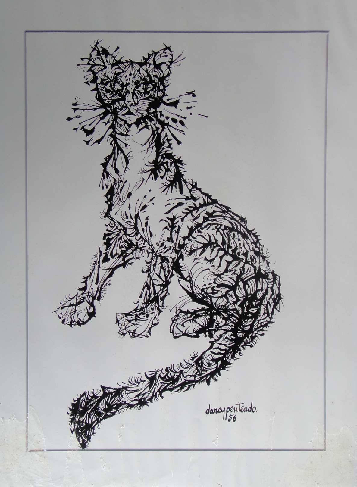
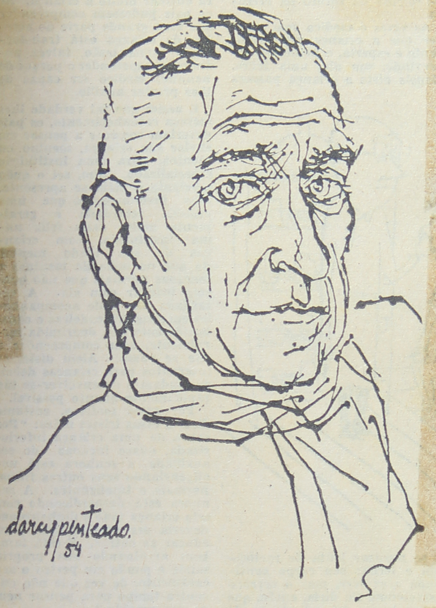
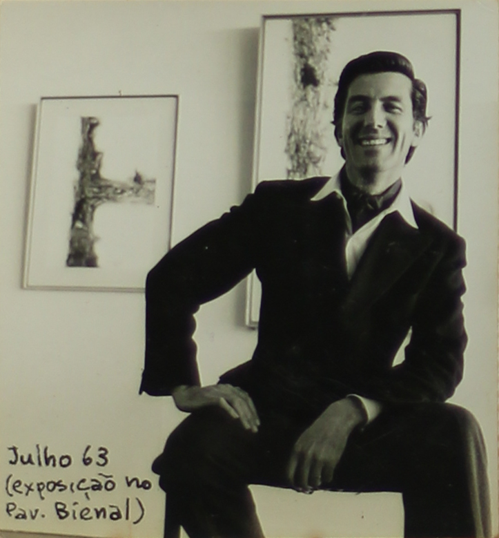
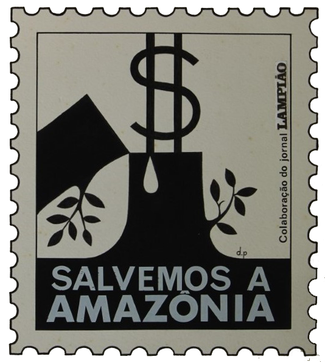

Linha do Tempo Darcy Penteado
1940 - 1980

Introdução
A arte multifacetada de Darcy Penteado
Manifestações artísticas, com propostas modernistas, agitaram o Teatro Municipal de São Paulo no
ano de 1922. Com um projeto estético diferenciado, a Semana de Arte Moderna, através das artes
plásticas, literatura, música, teatro, entre outras formas de arte, enternecia boa parte dos
olhares conservadores do período.
É nesse panorama, cuja diversidade de manifestações culturais se tornou marca brasileira dos
anos de 1920, que nasce Darcy Penteado, na cidade de São Roque, interior de São Paulo, no dia 30
de abril de 1926. Momento propício para chegar ao mundo um dos nossos maiores representantes das
artes plásticas, do desenho, da cenografia e dos figurinos.
 Casarão de São Roque, 1952. Desenho em bico de pena nanquim sobre papel.
Acervo Darcy Penteado - Fundação Enrico D´acqua , São Roque - SP
Casarão de São Roque, 1952. Desenho em bico de pena nanquim sobre papel.
Acervo Darcy Penteado - Fundação Enrico D´acqua , São Roque - SP
Na pré-adolescência, Darcy muda-se para a capital paulista, aproximando-se mais do universo
artístico que o cotidiano do centro urbano proporcionava. Em entrevista ao jornal
O Pasquim
[1], o artista revela que essa “mudança de ares” ocorreu aos 10 anos de idade para dar continuidade
aos seus estudos, já que à época não havia o curso ginasial na cidade de São Roque.
Em São Paulo, conclui o curso secundário e frequenta uma escola de desenho técnico, sendo contratado
aos 17 anos como desenhista de peças de fogão em uma fábrica.
 À esquerda: foto de Darcy e os irmãos, teatro de bonecos, sem data.
À direita: reprodução de matéria de O Estado de S.Paulo, Teatro de Bonecos, 1948.
Acervo Darcy Penteado - Fundação Enrico D´acqua , São Roque - SP
À esquerda: foto de Darcy e os irmãos, teatro de bonecos, sem data.
À direita: reprodução de matéria de O Estado de S.Paulo, Teatro de Bonecos, 1948.
Acervo Darcy Penteado - Fundação Enrico D´acqua , São Roque - SP
Suas práticas artísticas ecléticas lhe possibilitaram expressar-se de diversas formas. Durante os
anos de 1940, é constantemente solicitado para ilustrar obras de poetas e contistas brasileiros e
fazer croquis de moda para lojas e confecções. Inicia carreira como cenógrafo e figurinista de
teatro e realiza espetáculos infantis com seu teatro de bonecos no Museu de Arte Moderna em São
Paulo. Além disso, é contratado como arte-finalista em uma agência de publicidade [2].
Durante os anos de 1950, ilustra livros de Jorge Amado, Carlos Drummond de Andrade, Hilda Hilst,
Graciliano Ramos, Reynaldo Bairão, José Escobar Faria, entre outros, bem como as edições do Clube de
Poesia de São Paulo. Nessa década, amplia seu leque de trabalhos como desenhista: caricaturas para
jornais, revistas, livros infantis, croquis de cenografia e figurinos; além de atividades de escrita
como crítico de moda para a revista
Jóia.
 À esquerda: ilustração do livro Baladas, de Hilda Hilst, 2003, editora Globo.
À direita: ilustração do livro O país do carnaval, de Jorge Amado, 1979, editora
Record.
À esquerda: ilustração do livro Baladas, de Hilda Hilst, 2003, editora Globo.
À direita: ilustração do livro O país do carnaval, de Jorge Amado, 1979, editora
Record.
Suas exposições individuais se tornam muito frequentes nos anos de 1960. Embora a tentativa de
participar das primeiras Bienais de Arte de São Paulo não tenha sido promissora, durante a IV Bienal
Darcy pôde mostrar sua arte neste evento de alcance internacional.
Entre idas e vindas da Europa e da América do Sul, muitas exposições de suas obras puderam ser
apreciadas dentro e fora do Brasil. Diversas galerias espalhadas pelo mundo receberam o legado
artístico de Darcy Penteado nos anos de 1970. No intervalo entre as exposições, contribuiu com seus
talentos na organização dos desfiles de escolas de samba do Rio de Janeiro: Unidos de Vila Isabel,
Mocidade Independente de Padre Miguel e Imperatriz Leopoldinense.
Nos anos de 1980, Darcy Penteado participa de vários movimentos sociais em defesa de causas
ambientais e dos direitos humanos e em protesto à violência contra homossexuais e prostitutas.
Editor e articulista do jornal
Lampião da Esquina (que circulou entre 1978 e 1981), do qual
foi um dos fundadores, intencionava também dessa forma ser porta-voz das minorias marginalizadas
pela sociedade tradicionalista.
Reprodução de O charme da bicha brasileira, 1971. Tinta a óleo sobre plástico. Acervo
Fundação Enrico Dell'Acqua - São Roque (SP). Exposição Maloca Centro Cultural, Sorocaba (SP),
2021.
[1] DARCY PENTEADO escancara [entrevista] (
O Pasquim, ano XVII, n. 852, p. 11, 7 nov.-13 nov.
1985).
[2]
Darcy Penteado: Curriculum levemente humanizado (PREFEITURA de São Roque [acervo], data
provável: início dos anos 1980.
1940
Com seus desenhos, Darcy Penteado desponta e passa a ser concorrido
Quando Darcy Penteado iniciou sua carreira profissional, muitos eventos
artísticos chamavam a atenção na cidade
paulistana. Nas artes plásticas, foram inaugurados o Museu de Arte de São Paulo (Masp) em 1947 e
o Museu de Arte Moderna
(MAM) em 1949; já havia também um movimento de organização da primeira exposição da Bienal de
São Paulo, que ocorreria
somente em 1951. Nas artes cênicas, foi fundada a Escola de Arte Dramática (EAD) e criado o
Teatro Brasileiro de Comédia
(TBC), ambos em 1948. Em São Bernardo do Campo, cidade vizinha à capital, se instalava a
Companhia Cinematográfica Vera
Cruz em 1949, conhecida por muitos como a Hollywood paulista[1].

Foto de Darcy com escultura em arame, sem data.
Acervo Darcy Penteado - Fundação Enrico D´acqua , São Roque - SP
Esses anos foram muito significativos para as artes e para a cultura
paulista de forma geral. Darcy, que havia começado
a trabalhar como desenhista de peças de fogão em 1943, respirava esse clima de crescimento e
empoderamento das artes em
São Paulo. Em entrevista ao jornal O Pasquim[2], o artista conta que a disciplina
exigida nesse
emprego como desenhista
mecânico foi muito importante para sua formação, mas que ele gostava mesmo era de desenhar
figuras; então, inicia a
busca por trabalhos na área de moda, desenhando trajes femininos.
Seus desenhos criativos e originais o levam a abrir novas frentes de
trabalho: em agências de publicidade, revistas de
moda e ilustração de livros infantis. A harmonia de seus traçados se revela no uso da técnica de
bico de pena, que
permite traços com efeitos finos-grossos, tornando seus desenhos únicos, com diferenciais
atrativos e cativantes pela
beleza e elegância dos contornos.

Nu feminino, 1949. Desenho em nanquim sobre
papel.
Acervo Darcy Penteado - Fundação Enrico D´acqua , São Roque - SP
Aos 18 anos é contratado pela agência de publicidade Panam, depois pela Mc
Cann Erickson e por último pela Standard
Propaganda como arte-finalista. Em 1946, aos 20 anos, faz caricaturas para a revista Bom
Humor.
Tenta ingressar no teatro amador, no grupo de Décio de Almeida Prado, com a
participação de Cacilda Becker,
recém-chegada do rádio. Logo percebe que não leva jeito como ator, porém, se encanta pela
técnica cenográfica e pela
elaboração de figurinos.
Comentários de Paschoal Carlos Magno sobre o teatro de bonecos, no jornal
carioca Correio da Manhã, de 29 de maio de
1948, cita o nome de Darcy Penteado. Esse é um marco do aparecimento de seu nome na imprensa
nacional.
Seu interesse pelo teatro já existia desde a mais tenra infância. Ainda
pequeno, ao lado dos irmãos e da prima, Darcy
havia criado um teatro de marionetes, retomando essa ideia em 1949, junto com os artistas Duja
Gross, Nieta Lex e
Reynaldo Bairão, com uma proposta mais elaborada desse gênero teatral. Chegam a realizar alguns
espetáculos no MAM em
São Paulo, mas o projeto infelizmente não segue em frente.

Foto no jornal Folha da Noite em matéria sobre
apresentação do Grupo Teatro de Bonecos no TBC, dez. 1948. Acervo
Fundação Enrico Dell'Acqua - São Roque (SP).
Foram as ilustrações de poemas da Semana do Novíssimo, em evento realizado no Clube dos Artistas
de São Paulo, que
propiciaram ao artista sua primeira participação em exposições.
Durante o ano de 1948, entre os dias 29 de abril e 2 de maio, vários espaços culturais da cidade
de São Paulo abriram as
portas para receber os “novos” poetas, que, segundo o idealizador do evento – Domingos Carvalho
da Silva –, seria o I
Congresso Paulista de Poesia.

Ilustração para o livro de poemas Praia oculta,
de Domingos de Carvalho da Silva, 1949. Acervo Fundação Enrico
Dell'Acqua - São Roque (SP).
Aos “novos” poetas inspiradores da conferência acabam associando-se, a
partir do congresso, os “novíssimos”, divulgados
desde 1948 pelo Clube de Poesia de São Paulo, entre os quais estão Haroldo de Campos, Décio
Pignatari, Zulmira Tavares e
Mario Chamie, poetas cujo trabalho posterior acabaria por assumir orientação significativamente
independente [...] [3].
Espaços como os auditórios da Biblioteca Municipal de São Paulo, do jornal
A Gazeta e da Escola Normal Caetano de
Campos, bem como o MAM e o foyer do Teatro Municipal abriram suas portas aos poetas
durante o congresso.
Os retratos desenhados por Darcy Penteado também começam a circular pela
cidade de São Paulo, vindo a público mais um de
seus talentos: agora como retratista. Em 1948, pode-se apreciar o retrato de Di Cavalcanti, no
Diário de São Paulo. Em
1949, a revista Artes Plásticas publica o retrato de Jovina Duarte, mãe do sociólogo
Paulo Duarte.

Retrato de Emiliano Di Cavalcanti, 1948. Desenho
em nanquim.
Reserva técnica do Masp (SP).
Ainda em 1949, o artista se torna ilustrador do suplemento literário do
Jornal de Notícias, de São Paulo, sendo muito
procurado por contistas e poetas brasileiros para ilustrar seus livros, sejam capas ou
ilustrações internas.
Para fechar com chave de ouro a década de 1940, Darcy Penteado faz sua
primeira exposição individual na comemoração de
um ano da Semana do Novíssimo, no Instituto dos Arquitetos de São Paulo. O público pôde conhecer
então não somente seus
desenhos, mas também suas esculturas feitas com arame.
.

Catálogo do evento comemorativo da Semana do Novíssimo,
1949. Acervo Darcy Penteado - Fundação Enrico D´acqua , São Roque - SP
[1] MATTOS, David José Lessa (O espetáculo da cultura paulista:
teatro e
televisão em São Paulo [décadas de 1940 e 1950],
2002, p. 21).
[2] DDARCY PENTEADO escancara [entrevista] (O Pasquim, ano XVII, n. 852, p.
11, 7 nov.-13 nov. 1985).
[3] DA COSTA, Edson José (A Geração de 45. Letras, nº 49, p. 54, 1998).
1950
A efervescência artística e o vanguardismo de Darcy Penteado

Rosto desenhado com duas mãos ao mesmo tempo, 1952. Nanquim
sobre papel.
Acervo Fundação Enrico Dell’Acqua - São Roque (SP).
Nos anos de 1950, o Modernismo esteve presente em diversas formas de representação estética
na cidade de São Paulo, bem
como em outras regiões do território nacional. Nas paisagens urbanas, os novos projetos
arquitetônicos são pensados a
partir da utilização de elementos geométricos. Lúcio Costa e Oscar Niemeyer, responsáveis
pelo plano piloto e projeto
arquitetônico daquela que viria a ser a capital do país, tornam-se referência da arte
urbanística futurista com a
construção de Brasília, ocorrida entre 1957 e 1960.
Caminhando paralelamente a essas novidades arquitetônicas naqueles anos de 1950, o surgimento da
televisão – marco
importante da comunicação e da cultura nacional –, o novo ritmo musical do
rock and roll e o
concretismo estético, entre
outras manifestações artísticas, possibilitaram a ascensão de expressões culturais nas mais
diferentes áreas.
Na música, o movimento da Bossa Nova, que alcançou destaque mundial com sua forma diferenciada de
tocar e cantar o ritmo
do samba, é um exemplo dessas inovações.
Nas artes plásticas, o movimento concretista reuniu experimentações e pesquisas iniciadas nos anos
1940 e inaugurou uma
nova fase de produção artística. Inovações, explorações e descobertas abriram as portas para a arte
contemporânea. Essa
vanguarda pôde ser vista na I Bienal de São Paulo, realizada entre outubro e dezembro de 1951.

Ficha de Inscrição Bienal, 1951. Biblioteca e arquivo histórico
Wanda Svevo,
Fundação Bienal de São Paulo.
Inovações,
explorações e
descobertas abriram
as portas para a nova arte contemporânea.
A vanguarda do concretismo, iniciada pela música e incorporada pelas artes plásticas, puderam
ser
vistas na I Bienal de
São Paulo, realizada entre outubro e dezembro de 1951.
O cenário artístico já vinha sendo impulsionado desde o final da década de 1940 com a inauguração do
Museu de Arte de
São Paulo (Masp) e dos Museus de Arte Moderna do Rio de Janeiro e de São Paulo. Esses espaços
abrigavam a arte moderna,
acolhendo artistas e exposições imprescindíveis para o envolvimento do público nacional e
internacional com a arte
brasileira.
Um dos principais eventos internacionais das artes plásticas no Brasil até hoje, a Bienal de São
Paulo teve sua primeira
edição, em 1951, amplamente noticiada. No concurso realizado para a escolha do cartaz de divulgação,
Darcy Penteado
obteve a segunda colocação, resultado bastante significativo para sua carreira e visibilidade como
artista plástico.
Cartaz premiado em 2º lugar na 1ª Bienal de São Paulo, 1951.
Biblioteca e arquivo histórico Wanda Svevo, Fundação Bienal de São Paulo.
No final do ano de 1952, Darcy participa do 2º Salão Paulista de Arte Moderna, no setor de desenho.
Esse evento,
realizado pela primeira vez em 1948, teve papel importante na promoção da arte brasileira,
oferecendo um espaço singular
para exposição de artistas emergentes. Os “Salões de Arte Moderna” que pipocavam em várias cidades
brasileiras permitiam
a apresentação de obras em diferentes formatos: fotografia, desenho, pintura, instalações
multimídia, entre outras.
No Museu de Arte Moderna de São Paulo (MAM-SP), em março de 1954, o artista inaugura uma exposição
de desenhos com a
presença de pessoas ilustres da sociedade. Utilizando-se da técnica “mata-borrão”, esses desenhos
envolviam papéis,
tecidos ou esponjas para atenuar ou fundir as texturas ou linhas.

Gato, 1956. Desenho em mata-borrão.
Acervo Fundação Enrico Dell’Acqua - São Roque (SP).
Neste mesmo ano, o artista participa do 3º Salão Nacional de Arte Moderna no Rio de Janeiro; no ano
seguinte, 1955,
compõe a mostra da III Bienal de São Paulo; e, em 1956, faz nova exposição individual no MAM-SP.
Meninas, 1953. Desenho em nanquim sobre papel.
Acervo Fundação Enrico Dell’Acqua - São Roque (SP).
Artes Cênicas
Esse viés artístico de Darcy Penteado aparece já em sua meninice, com o teatro de bonecos
que ele criara junto com os
irmãos e uma prima e promovia singelas apresentações em sua cidade natal. Ao longo da
carreira, esse talento se expandiu
para figurinos e cenários de diversas produções teatrais, com os quais obteve seus primeiros
reconhecimentos públicos.
Em 1952, uma nova fase de seu contato com as artes cênicas se inicia: estreia no Teatro Brasileiro
de Comédia (TBC) com
a confecção de máscaras para a versão grega da peça Antígone, de Sófocles, sob direção de Adolfo
Celi, figura de
destaque na profissionalização do teatro nacional à época. No mesmo ano, Darcy faz a cenografia e o
figurino da peça A
calça, de Carl Sternheim, direção de Evaristo Ribeiro, e, em 1954, da peça Iolanda, de Curt Goetz,
dirigida pelo então
iniciante Antunes Filho, ambas para o grupo teatral de Lotte Sievers [1].

Foto de Darcy no cenário da peça de teatro A calça, 1952.
Acervo Fundação Enrico Dell’Acqua - São Roque (SP).
Fundado na cidade de São Paulo pelo empresário Franco Zampari, em 1948, o TBC, sob influência das
vanguardas teatrais
europeias do período, trouxe diversas inovações para o universo teatral do país, modernizando-o em
vários aspectos.
O ecletismo, marca da companhia, propiciava a criação e produção de peças com novas propostas
estéticas e com
dramaturgias impetuosas, rompendo com tendências mais convencionais.
Construíram a imagem do TBC muitos artistas que se tornaram famosos: Cacilda Becker, Paulo Autran,
Tônia Carrero, Walmor
Chagas, Fernanda Montenegro, Fernando Torres, Cleyde Yáconis, entre outros.
As montagens [de teatro de bonecos] de Nieta Lex Leite eram basicamente para o público infantil,
mas, no ano de 1953,
arriscou fazer um espetáculo para adultos, juntamente com Maria Duja Gross, Nelly Ribeiro Leite,
Darcy Penteado e
Reynaldo Bairão. No TBC, apresentaram Pássaro de Fogo, de Stravinsky, O Irmão das Almas e O
Maquinista, de Martins Pena,
e Farsa Grotesca, de Aldous Huxley. Os bonecos foram de autoria de Darcy Penteado [2].
Darcy Penteado esteve envolvido com o TBC em diversos momentos. Em 1958, ele elabora os figurinos da
peça Pedreira das
almas, texto de Jorge Andrade, dirigida por Alberto D’Aversa, demonstrando mais uma vez sua
criatividade e habilidade
como designer teatral. Esse trabalho lhe rendeu o Prêmio Saci, em 1959, de melhor figurinista,
oferecido pelo jornal O
Estado de S. Paulo. Tal premiação ocorria anualmente aos maiores destaques da produção nacional de
teatro e cinema.

Catálogo da peça de teatro Pedreira das almas, 1958. Acervo
Fundação Enrico
Dell’Acqua - São Roque (SP).

À esquerda: fotos na revista O Cruzeiro, peça de teatro É
proibido suicidar-se na primavera, com Nicete Bruno e Paulo
Goulard, cenário de Darcy, 1954. À direita: Catálogo da peça, 1954. Acervo Fundação Enrico
Dell'Acqua - São Roque (SP).
Durante os anos de 1950, Darcy teve a oportunidade de trabalhar com renomados diretores teatrais. Em
1953, desenvolve
cenário e figurinos para a peça
É proibido suicidar-se na primavera, de Alejandro Casona,
direção de
Ruy Affonso,
encenado pela Companhia Nicette Bruno. Por este trabalho, o artista recebeu o Prêmio Governador do
Estado de melhor
cenografia.
No ano de 1954, Darcy Penteado desenha a cenografia e os trajes do balé
Sonata da angústia,
para o evento comemorativo
do IV Centenário de São Paulo [3]. A coreografia ficou a cargo de Ismael Guiser, nome consolidado na
história da dança
brasileira, com música do compositor húngaro Béla Bartók. Para produzir a cenografia, Darcy teve que
explorar
sentimentos e emoções compatíveis à atmosfera dramática da dança.
Neste mesmo ano, inicia cenários e figurinos para a nascente televisão.
Esses são apenas alguns exemplos da contribuição do artista nas artes cênicas.
Literatura: ilustrações e retratos
Concomitantemente ao trabalho desenvolvido no teatro, Darcy Penteado mantém-se bastante ativo em
outras atividades
artísticas.
Desde o final da década de 1940, dedicava-se ao desenho de retratos e às ilustrações para livros,
jornais e revistas.
Nos anos de 1950, ilustra livros de Hilda Hilst, Domingos Carvalho da Silva, Reynaldo Bairão, entre
outros, bem como as
edições do Clube de Poesia de São Paulo.
Para compor seus textos visuais, utiliza-se da intertextualidade, diálogo entre diferentes
linguagens, englobando
elementos de diversas produções imagéticas.
Em 1950, Darcy Penteado participa da exposição coletiva organizada por Oswald de Andrade no
foyer do Teatro Municipal de
São Paulo. Esse tipo de exposição se tornou rotineira em várias localidades do país, pois era uma
forma de dar
visibilidade à nossa vanguarda literária.
Em 1952, Darcy realiza frequentes trabalhos de capista e ilustrador para a Livraria Martins Editora
e, no ano seguinte,
além de ilustrar livros infantis para a Edições Melhoramentos, de São Paulo, o faz também para o
livro premiado do
Concurso de Poesia Feminina do jornal
A Gazeta (SP). Em 1957, publica o álbum
Nosso teatro
de bonecos pela
Melhoramentos.
Capa do Livro Nosso Teatrinho de Bonecos, de Reynaldo Bairão
e Darcy Penteado, 1957, Edições Melhoramentos. Acervo
Fundação Enrico Dell’Acqua - São Roque (SP).
O livro da poeta Lupe Cotrim,
Raiz comum, de 1959, recebe um belo retrato da autora desenhado
por Darcy, sendo dele
também as ilustrações de
Monólogos do afeto, livro de estreia de Lupe em 1956 [4].
A técnica utilizada por Darcy na composição dos retratos em branco e preto tornou-se uma de suas
marcas registradas
nesse gênero das artes visuais.

Retrato de Oswald de Andrade, 1957. Jornal Folha da Noite, 8
fev. 1957.
Acervo Fundação Enrico Dell’Acqua - São Roque (SP).
Os jornais e revistas brasileiros impressos tiveram papel muito importante na cultura letrada
nacional, sendo
fundamentais para a difusão de informações, ideias e debates. Os periódicos eram veículos vitais
para o jornalismo,
ciência, política, literatura, esportes, artes, entre outras áreas do conhecimento, principalmente
em um período em que
pouquíssimos lares brasileiros tinham acesso a um aparelho de televisão.
Darcy Penteado, ao assinar suas produções para os periódicos nacionais, garantia maior visibilidade
pessoal e
profissional na sociedade da época. Em 1951, ele inicia um trabalho no suplemento de arte do
Jornal de Notícias, cuja
seção “Sucesso teatral da semana” trazia seus desenhos e respectivos comentários sobre as artes
cênicas.
No início de 1952, o artista começa a colaborar como ilustrador na
Revista Branca, de
literatura e arte, do Rio de
Janeiro, e a ilustrar a revista
Rio. No ano seguinte, ainda para a revista Rio, faz uma série
de entrevistas desenhadas,
cujo título era “O artista em seu habitat”.

Capa da revista Rio, 1952. Acervo Fundação Enrico
Dell'Acqua - São Roque (SP).
A partir de 1956, Darcy torna-se ilustrador do Suplemento Literário do jornal O Estado de S. Paulo.
O
suplemento fora
idealizado para ser um espaço dedicado a resenha de livros, entrevistas com autores, artigos sobre
literatura, crítica e
demais temas do mundo literário, sendo uma importante plataforma de divulgação e debate sobre a
literatura nacional e
internacional.
No ano de 1958, ele começa a fazer comentários e críticas sobre a história da moda na revista Jóia,
cujo
público-alvo
eram os segmentos de moda e joias, trazendo informações e novidades do mercado, tendências e estilos
de
moda e beleza.
A sétima arte
No ano de 1952, Darcy Penteado assumiu um belo trabalho para a Cia. Cinematográfica Vera Cruz, cuja
responsabilidade era
a de desenhar em quadrinhos o filme Tico-tico no fubá, dirigido por Adolfo Celi. Sendo uma comédia
musical que
homenageava o choro “Tico-tico no Fubá”, de Zequinha de Abreu, esse longa-metragem tornou-se uma
referência do cinema
brasileiro.

Filme Tico-tico no fubá em quadrinhos, jornal Última
hora, 14
abr. 1952.
Acervo Fundação Enrico Dell’Acqua - São Roque (SP).
Para não finalizar: o ecletismo
O envolvimento de Darcy Penteado com diversas artes durante a década de 1950 lhe propiciou
desenvolver
trabalhos
ao lado
de artistas e intelectuais consagrados da arte moderna e da vanguarda intelectual brasileira: Oswald
de
Andrade,
Hilda
Hilst, Lasar Segall, Mario Zanini, entre tantos outros nomes relevantes da cultura nacional. Isso
oportunizou
alavancar
seu trabalho como artista plástico, figurinista, ilustrador, produtor audiovisual, desenhista e
cenógrafo.
Influenciado pelas vanguardas europeias (expressionismo e cubismo), soube incorporar a realidade
brasileira à
sua
produção. Seu ecletismo artístico permitiu a exploração de temas relacionados ao cotidiano, à rotina
urbana, às
questões
sociais, retratando com sensibilidade as nuances da vida brasileira.
[1] Não conseguimos confirmar, em pesquisa, se estas peças foram encenadas no TBC.
[2] MENDONÇA, Tânia Gomes (Entre os fios da história..., 2020, p. 399).
[3] Embora o balé tenha sido organizado para estrear em São Paulo, isso ocorreu no Rio de Janeiro
porque
o
Teatro Municipal
de São Paulo estava em reforma.
[4] GOUVÊA, Leila V. B. (Lupe Cotrim: algumas lições do amigo..., 2009, p. 60 e 63).
1960
A Pop-Art de Darcy Penteado nos anos de arte e resistência

Foto de Darcy na Bienal de São Paulo, 1967.
Acervo Fundação Enrico Dell’Acqua - São Roque (SP).
Nos anos de 1960, enquanto o Brasil estava imerso em profundas
transformações sociais e políticas, a cena cultural
fervilhava com uma gama diversificada de movimentos artísticos que surgiam como reações
audaciosas àquele contexto.
Período marcado por um cenário político sombrio, com um golpe militar em
1964 implementando uma longa ditadura, que
perdurou até meados dos anos 1980. Essa reviravolta política teve repercussões profundas na vida
cultural do país, com a
censura e a repressão política lançando uma sombra sobre a liberdade de expressão e a
criatividade artística.
Ao mesmo tempo que o Brasil se debatia com mudanças e desafios em sua
identidade nacional, os artistas encontravam
maneiras ousadas e provocadoras de expressar suas visões de mundo e resistir às limitações
impostas pelo regime político
autoritário. Nesse cenário complexo, diversos movimentos culturais emergiram e tomaram lugar
permanente na história da
arte brasileira, além de desempenharem um papel decisivo na resistência artística e política
contra a opressão.
Na música, a Tropicália, movimento liderado pelos artistas Caetano Veloso,
Gilberto Gil e Gal Costa, buscava retomar
criativamente a tradição cultural do país, reinventando-a para os tempos contemporâneos,
“devorando” influências
estrangeiras e transformando-as em algo genuinamente nacional, através da combinação de
elementos da música popular
brasileira com influências do rock e da cultura pop, com abordagens experimentais e
provocadoras. Ao questionar e
subverter normas estéticas e culturais tradicionais, o movimento antecipou tendências que se
tornariam características
do pensamento pós-moderno, como a fragmentação, a pluralidade e o ecletismo.
No cinema, o denominado Cinema Novo despontou como um farol de inovação e
engajamento político. Esse movimento, liderado
pelos visionários cineastas Glauber Rocha, Nelson Pereira dos Santos e Cacá Diegues, marcou uma
virada significativa no
cenário cinematográfico nacional, criando películas profundamente engajadas politicamente,
capazes de abordar
profundamente questões sociais e políticas brasileiras.
Glauber Rocha, por exemplo, conhecido por seu filme Deus e o diabo na
terra
do sol, narrou nesse longa-metragem a
jornada de um homem oprimido que se torna um líder messiânico. Nelson Pereira dos Santos, por
sua vez, dirigiu Vidas
secas, obra homônima de Graciliano Ramos, que retrata a dura vida de uma família de
trabalhadores rurais no sertão
nordestino. Cacá Diegues, com Ganga Zumba, mergulhou nas raízes da cultura
afro-brasileira e na
história da escravidão
no país, trazendo à tona questões de identidade e resistência. Esse movimento deixou um legado
duradouro e inspirou
gerações subsequentes de cineastas a explorar novas narrativas e a dar voz às preocupações da
sociedade.
No que diz respeito ao teatro, este também estava passando por mudanças
significativas com o aparecimento de grupos de
vanguarda, como o Teatro Oficina, de Zé Celso Martinez Corrêa, que apresentava peças
provocativas e politizadas com
temas sociais.
Na literatura, assistimos a um momento muito produtivo e transformador.
Marcada por um profundo engajamento político e
social, a década de 1960 testemunhou o surgimento de vozes literárias que ecoavam os anseios de
uma nação em busca de
identidade e justiça. Autores como Clarice Lispector, Guimarães Rosa e João Cabral de Melo Neto
continuaram a enriquecer
o panorama literário, enquanto novas vozes trouxeram abordagens mais contemporâneas e
introspectivas, a exemplo de Lygia
Fagundes Telles.
Nas artes plásticas, São Paulo se destacava como um epicentro criativo, que
desafiava os limites da expressão artística.
A arte contemporânea apresentava, nas bienais de São Paulo, artistas nacionais e internacionais
de relevo, como os
brasileiros Hélio Oiticica e Lygia Clark, entre outros que exploravam novas formas de arte, como
a arte cinética e a
arte participativa.
Nesse contexto, um nome se destacava e ecoava nas galerias, nos teatros e
ateliês da cidade: Darcy Penteado. Seu
trabalho marcado pela ousadia e exploração de novas técnicas fora marcante na cena artística
daquele momento. Podiam ser
apreciadas obras repletas de figuras humanas, paisagens urbanas e cenas do cotidiano, todos
carregados de um espírito
provocador e questionador.
Autorretrato Eu. 1964. Colagem. Acervo Masp.
Foto:
Alexandra Cavassana.
Mas seu trabalho não se limitava à estética vibrante, carregava também uma
mensagem crítica e política. Em um momento em
que o Brasil vivia sob uma ditadura militar, as obras de Darcy Penteado frequentemente faziam
alusões sutis às questões
sociais, à desigualdade e à repressão política. Seus retratos de figuras populares eram uma
afirmação da identidade
nacional e um grito contra a opressão.
Darcy se tornou uma das figuras centrais do movimento conhecido como
Pop-Art brasileira, o qual buscava expressar as
transformações sociais, culturais e políticas da época por meio da arte. Explorou diversas
linguagens artísticas,
incluindo pinturas e gravuras, em composições dinâmicas que revelavam muitas delas formas
orgânicas e geométricas.

Fragmentos da obra A boneca, 1964. Assemblage.
Acervo Fundação Enrico Dell’Acqua - São Roque (SP).
Além de sua contribuição para as artes, se envolveu também em questões
sociais e políticas, participando ativamente do
movimento cultural e artístico brasileiro de então. Seu comprometimento com a experimentação e a
inovação artística
colaborou para enriquecer o cenário cultural das artes plásticas, das artes cênicas, da
literatura e da imprensa
nacional daqueles anos.
A cenografia que encantou palcos Brasil afora
Durante os anos de 1960, na Bienal de Teatro [1], Darcy Penteado apresentou
duas maquetes que o colocaram como forte
candidato ao prêmio do evento. Uma delas representando o cenário da peça O doente imaginário, de
Molière, que, na linha
estilista, trouxe uma solução inteligente para o desafio de um teatro móvel, no caso, o Pequeno
Teatro Popular. O
cenário utilizava apenas uma cor de fundo, permitindo que os figurinos coloridos dos atores se
destacassem. Esse
trabalho demonstrou a habilidade do artista de combinar as funções de cenógrafo e figurinista em
uma única pessoa,
ressaltando sua forma eclética de elaborar obras artísticas.
Darcy também assumiu a responsabilidade pela cenografia da peça
Armadilha
para um homem só, de Robert Thomas e direção
de Luís de Lima, no Teatro Maria Della Costa, em São Paulo. Ao chegar ao Rio de Janeiro em
1962,
no Teatro Copacabana, o
Correio da Manhã dedicou o início da página do jornal para chamar a atenção do público
sobre
essa obra e sua cenografia,
destacando a incrível versatilidade do artista, tanto nas artes plásticas como no teatro
[2].
Darcy Penteado não era apenas um grande artista plástico, mas também um
mestre na arte de dar vida aos espaços teatrais
com sua visão única e criativa. Sua habilidade em criar ambientes cênicos o fazia traduzir com
primor o espírito da obra
para o palco. Embora o teatro sempre estivesse presente em sua vida, no decorrer dos anos de
1960, entre idas e vindas
da Europa, o artista passou a dedicar seu tempo mais assiduamente ao desenvolvimento das artes
plásticas.
Explorando fronteiras artísticas: da vanguarda 'post-pop' à releitura da
Via Crucis
No início dos anos 1960, Darcy Penteado vivenciou o auge de sua
criatividade e reconhecimento artístico, deixando sua
marca na cena cultural. Em um momento em que vicejava a efervescência artística da cidade de São
Paulo, crescente a cada
dia, o artista apresentou uma exposição individual na prestigiosa Galeria São Luís. Essa
exposição revelou ao público
uma série de desenhos intrigantes e cativantes, intitulada “Gaiolas”.
Dentro desse conjunto de obras, Darcy Penteado explorou dois temas
principais: gaiolas e alçapões. Com uma habilidade
ímpar na utilização de bisnagas, deu vida à sua visão artística em trabalhos tanto sobre papel
como sobre tela. A
exposição não apenas impressionou os espectadores pela técnica utilizada, mas também pela
profundidade conceitual das
criações do artista, que convidavam o público a refletir sobre questões de liberdade,
confinamento e a complexa relação
entre o ser humano e sua busca por autonomia.
Em 1961, a Casa do Artista Plástico de São Paulo celebrou uma memorável
retrospectiva intitulada “14 anos de desenho”,
que trouxe à luz a evolução contínua e a riqueza da obra de Darcy Penteado. No catálogo da
exposição, o crítico de arte
Sergio Milliet comenta: “Pouco teria que acrescentar agora, em 1961, porquanto as
características do artista continuam
as mesmas...”.[3] Essa observação destaca a consistência da identidade artística de Darcy
Penteado ao longo dos anos. No
entanto, Milliet ressalta que essa continuidade não deveria ser interpretada como estagnação,
pois o artista demonstrava
constante inovação em sua abordagem.
Darcy Penteado explorou novas técnicas e materiais ao longo de sua jornada
criativa, experimentando com papel,
mata-borrão, tecidos trabalhados, pincel e conta-gotas. Essas explorações não o afastaram do
figurativismo, mas
adicionaram novas dimensões à sua obra. Conforme nota Milliet, o artista passou a dar menos
importância ao tema em si e
concentrou-se cada vez mais na criação de ritmos e composições impactantes.

Bicicleta, 1961. Acrílica sobre compensado.
Acervo Fundação Enrico Dell’Acqua - São Roque (SP).
Darcy Penteado participou também, entre os anos de 1961 e 1962, de
exposições na Galeria de Arte das Folhas [4], onde
artistas como Tomie Ohtake, Aldemir Martins, Francisco Rebolo e outros tiveram suas obras
exibidas ao longo dos anos.
Ainda em 1962, o jornal Estado de Minas [5] anunciava o lançamento
do
álbum
Caderno de Ouro Preto, obra que contém os
desenhos do artista cuidadosamente elaborados sobre a antiga Vila Rica. Cada traço desses
desenhos une-se
harmoniosamente com a poesia de Reynaldo Bairão, resultando em uma experiência artística
profunda e envolvente. Esse
caderno de arte teve tiragem limitada a 1 mil exemplares, todos confeccionados com um toque
de refinamento ímpar. Dentre
eles, trinta e cinco exemplares se destacaram como verdadeiras joias, pois abrigavam
desenhos originais, ricos em
detalhes.
CadernoVisão plástica de Portugal, 1967.
Ilustração.
Acervo Fundação Enrico Dell’Acqua - São Roque (SP).
Ainda na primeira metade dos anos de 1960, Darcy Penteado fixou residência
na Europa. Ao chegar à Itália, o artista
reencontrou suas raízes figurativistas, mergulhando profundamente no universo da representação
visual. No entanto, sua jornada artística tomou um novo rumo ao embarcar em experimentações com
colagens que incorporavam
objetos inusitados. A crítica de arte italiana, sempre atenta às novas tendências, classificou
sua obra como “post-pop”,
termo que reflete a fusão de elementos da Pop-Art com uma perspectiva contemporânea única.
Giulio Argan, então presidente da Associação Internacional de Críticos de
Arte, demonstrou interesse particular pela
obra de Darcy Penteado. Argan destacou a “nostálgica poesia dos objetos extintos” [6] como uma
constante na obra do artista,
apreciando a maneira como ele explorou a relação entre a cultura popular e a arte contemporânea,
revelando um profundo
entendimento das complexidades da sociedade moderna por meio de sua expressão artística
singular. A classificação
“post-pop” ressoou como uma marca de inovação e criatividade na cena artística italiana.

A mulher e a viola, 1965. Assemblage.
Acervo Fundação Enrico Dell’Acqua - São Roque (SP).
Já em solo brasileiro, em maio de 1966, uma exposição no Museu de Arte de
São Paulo (Masp) apresentou uma ousada e
provocante série de quadros que retratavam a vida de Cristo de uma forma completamente
diferente. Sem dúvida, a série
Via Crucis, de Darcy Penteado, foi um verdadeiro marco em sua trajetória artística. Nessa
interpretação contemporânea da
Via Sacra, que narra a jornada de Jesus Cristo desde a condenação até a crucificação, o artista
demonstrou sua
habilidade em reinventar temas religiosos clássicos.
Sobre a obra, o próprio artista aponta: “Considero a Via Crucis um dos
temas mais apaixonantes. O drama do Cristo é tão
atual, a humanidade continua tão a mesma coisa que, tenho certeza, caso ele de novo aparecesse
seria igualmente
crucificado. Sabe-se lá se já não voltou algumas vezes e se em todas elas nós não o
assassinamos? Quantos Cristos já
terão sido sacrificados só pela nossa geração?” [7].
Darcy não se esquivou do profundo simbolismo e significado religioso que
permeiam a Via Crucis, mas ousou expor uma
visão pessoal e única. Seu estilo artístico distintivo é evidente em cada estação, desafia as
convenções e incentiva os
espectadores a ter um novo olhar para a história de Cristo. Com elementos visuais e conceituais
provocativos, a obra faz
um convite à reflexão acerca da jornada de Cristo e suas implicações espirituais e humanas no
mundo contemporâneo.
De acordo com a revista Manchete, “Darcy Penteado propõe uma nova
série de quadros da vida de Cristo, não mais
configurada nas 14 estações tradicionais, mas em 10 telas baseadas nos depoimentos dos
evangelistas. A eternidade do
tema sacro, já interpretada por artistas em todas as épocas, passa agora pelo branco e preto do
artista brasileiro, numa
versão caótica que apresenta Cristo como um componente do mundo absurdo de hoje. No painel de
Darcy Penteado, esse
Cristo caminha, consciente e altivo para a crucificação” [8].
Acima, à esquerda: Cristo recebe a cruz, série
Via Crucis, 1966. Colagem. Acervo Fundação Enrico Dell'Acqua - São Roque
(SP). Acima, à direita: Cristo recebe a cruz, série Via Crucis, 1966. Caneta
hidrográfica sobre papel. Foto do Acervo
Masp. Abaixo, no centro: foto de Darcy com sua obra em São Roque. Acervo Fundação Enrico
Dell'Acqua - São Roque (SP).
O "futilismo" de Darcy Penteado e seu o olhar artístico icônico
Nos agitados anos da década de 1960, um movimento artístico intrigante e
controverso emergiu das mãos criativas de Darcy
Penteado, deixando sua marca indelével na cena cultural brasileira. Esse movimento, apelidado de
“futilismo”,
rapidamente se tornou um tópico quente nos jornais do país, provocando debates acalorados e
críticas apaixonadas.
Em 11 de março de 1969, o jornal O Globo fez uma manchete audaciosa
anunciando a chegada dessa “nova onda” nas artes
plásticas, lançando luz sobre as controvérsias que cercavam o artista e seu movimento. O
futilismo foi descrito como uma
apologia à futilidade, uma postura aparentemente cínica, mas profundamente irônica e perspicaz.
Em um momento em que a
sociedade clamava por compromissos e engajamento, o futilismo de Darcy Penteado parecia uma
fuga, mas, nas palavras do
próprio artista, era uma forma consciente de passividade diante dos desafios e condicionamentos
mundanos.
Para muitos, o futilismo representava uma espécie de alienação, um
conformismo com os valores da época. No entanto, sua
aparente contradição era uma estratégia deliberada, destinada a provocar reflexão sobre seu
tempo. Darcy via esse
movimento icônico como uma declaração de atitude, um modo de confrontar a sociedade
contemporânea de maneira sarcástica
e mordaz, inspirado pelos cineastas Federico Fellini e Jacques Tati, que usavam o humor como
ferramenta para críticas
sociais profundas.
A pintura dentro do futilismo era uma celebração do humor, com tons de
ironia, caricatura e uma falta intencional de
pretensões grandiosas. Não se tratava de resolver os problemas do mundo, mas de lançar um olhar
crítico sobre eles. Com
raízes na Pop-Art, compartilhava com esse movimento a disposição para questionar o cotidiano,
rejeitando a
responsabilidade de fornecer soluções. Era uma abordagem que, de maneira estranha e intrigante,
capturava a essência de
uma época turbulenta que poderia ser transformada em arte.
Entre capas e ilustrações: Darcy Penteado mantém-se presente na literatura
Nos anos 1960, Darcy Penteado continua emprestando igualmente seu talento
para a cena literária. Colaborava como
ilustrador para o Suplemento Literário do jornal O Estado de S. Paulo desde a segunda
metade dos anos 1950.
Em 1961 [9], o romance Mea culpa, de Lígia Junqueira Caiubi, cujo
título fora inspirado na cantora francesa Edith Piaf, é
anunciado com destaque. A capa do livro, elaborada com a criatividade singular de Darcy
Penteado, foi enfatizada como
uma peça artística por si só.
Ilustração do conto “Avó”, escrito pelo próprio Darcy,
Folha de S.Paulo, suplemento Folha Feminina, 29 maio 1966.
Outra escritora que pôde contar com as ilustrações do artista foi Lygia
Fagundes Telles [10], em Histórias escolhidas. Esse
livro reuniu uma seleção de contos premiados no concurso de autores nacionais das editoras
Círculo de Leitura e
Melhoramentos. As ilustrações de Darcy Penteado adicionaram uma dimensão visual única a essa
obra literária.
Além disso, o livro Aventuras de Eduardo, de Elos Saad [11], voltado
ao público infantil, também se beneficia do talento de
Darcy Penteado. Embora destinado a crianças, as narrativas do livro eram susceptíveis de
encantar também os adultos, com
ricas ilustrações e capa cuidadosamente elaborada pelo artista.
Assim, Darcy Penteado não apenas deixou sua marca nas artes plásticas, mas
também contribuiu de maneira significativa
para realçar obras literárias com suas ilustrações e capas cativantes.

Ilustração do livro Infâncias, de Graciliano
Ramos,
1966.
Acervo Biblioteca Municipal Arthur Riedel, São Roque (SP).
Arte e rebeldia: marcando uma época
Nos anos de 1960, a obra de Darcy Penteado se destacou como um reflexo
vibrante
e desafiador da efervescência cultural
da época. Em meio a um cenário de mudanças sociais, políticas e culturais, o artista chancelou
sua
marca nas artes
plásticas, apresentando um corpo de trabalho que, além de encantar o público, o provocava a
pensar
mais profundamente
sobre o mundo ao redor.
Seu estilo, marcado pela ousadia, capturou a energia e a vitalidade dos
anos
1960. Suas pinturas, repletas de figuras
humanas, paisagens urbanas e cenas do cotidiano, eram provocativas e questionadoras. No entanto,
sua
arte não se
limitava à estética, ela carregava uma mensagem crítica e política.
Além disso, o artista introduziu o futilismo, movimento artístico
intrigante e
provocativo, que desafiou as convenções
da época e levou a discussão sobre a futilidade e a ironia à vanguarda do cenário artístico.
Assim
como a Pop-Art,
refletia a atitude irreverente e cínica da sociedade em relação ao mundo contemporâneo.
Em resumo, os anos de 1960 foram uma época de profunda transformação e
agitação
cultural, e Darcy Penteado emergiu como
um dos artistas mais icônicos desse período. Sua obra não apenas refletiu os desafios e as
contradições da sociedade da
época, mas também contribuiu para a discussão crítica e a evolução das artes plásticas no
Brasil.
[1] Jornal O Estado de S. Paulo (Suplemento Literário), 7 out. 1961.
Disponível
em:
https://memoria.bn.br/DocReader/DocReader.aspx?bib=098116x&Pesq=darcy%20penteado&pagfis=1532.
Acesso
em: 21 out. 2023.
[2] “O CENÓGRAFO – Trata-se de Darcy Penteado, artista plástico dos mais
renomados de São Paulo, com triunfos em várias
áreas, e bem-sucedido na cenografia. Darcy Penteado tem também colaborado com seu bom gosto em
capas de livros [...], e
são famosos seus retratos de personalidades. Sua presença na cenografia não pode deixar de ser
bem recebida”. Fonte:
Correio da Manhã, 7 jun. 1962. Disponível em:
http://memoria.bn.br/docreader/DocReader.aspx?bib=089842_07&pagfis=29625.
Acesso em: 21 out. 2023.
[3] Catálogo da exposição retrospectiva “14 anos de desenho”. Casa do
Artista Plástico de São Paulo. São Paulo, 1961.
[4] A Galeria das Folhas foi fundada em São Paulo em 1954, desempenhando um
papel significativo na promoção e exposição de
obras de artistas plásticos brasileiros. Ficou conhecida por apresentar exposições de artistas
renomados e emergentes e
por promover a construção do mercado de arte no país. Fonte: SOUZA, Fernando Oliveira Nunes de
(Isai Leiner: um homem de
negócios, homem das artes, 2019).
[5] Jornal Estado de Minas, 5 jan. 1962.
[6] LEMOS, César (Via Crucis post pop. Manchete, 16 abr. 1966).
[7] LAUS, Harry (A orgia festiva dos post-pop. Entrevista com Darcy
Penteado. Jornal do Brasil, 21 abr. 1966).
[8] LEMOS, César (Via Crucis post pop. Manchete, 16 abr. 1966).
[9] Jornal O Estado de S. Paulo, 2 abr. 1960. Disponível em:
https://memoria.bn.br/DocReader/DocReader.aspx?bib=098116x&Pesq=darcy%20penteado&pagfis=1074.
Acesso em: 21 out. 2023.
[10] Jornal O Estado de S. Paulo, 11 fev. 1961. Disponível em:
https://memoria.bn.br/DocReader/DocReader.aspx?bib=098116x&Pesq=darcy%20penteado&pagfis=1344.
Acesso em: 21 out. 2023.
[11] Jornal O Estado de S. Paulo, 19 jan. 1963. Disponível em:
https://memoria.bn.br/DocReader/DocReader.aspx?bib=098116x&Pesq=darcy%20penteado&pagfis=1916.
Acesso em: 21 out. 2023.
1970
Darcy Penteado: expressões artísticas nos Anos de Chumbo
Nesta década, a sombra da ditadura militar se estendeu sobre o cenário da arte brasileira,
impactando a preservação de
obras de arte fora de acervos públicos. Artistas foram moldados por instituições de arte e sistemas
de valorização
econômica e simbólica, muitas vezes sendo mitificados ou, o inverso, desaparecendo da cena
artística.
As manifestações culturais no Brasil refletiram uma forma de questionamento e autorregeneração
focada nos mecanismos da
produção artística. No teatro, sobreveio a crítica aos “teatros empresas” e o aparecimento de grupos
que promoviam uma
abordagem coletiva: Ornitorrinco e o grupo Asdrúbal Trouxe o Trombone são exemplos.
O cinema de perspectiva popular buscava narrativas inovadoras, não lineares, destacando aspectos
marginais da cultura
brasileira. A crescente indústria cultural, apesar de refletir o
establishment
, contribuiu para o
desenvolvimento de
diversas áreas artísticas. No jornalismo, se fortalecia uma imprensa de resistência, denominada
alternativa, sendo
O
Pasquim um de seus principais representantes, formado por uma equipe de renomados
ilustradores,
chargistas e
jornalistas, como Jaguar, Ziraldo, Millôr Fernandes, Fortuna e Tarso de Castro. No telejornalismo, a
TV Cultura
apresentou
A Hora da Notícia.
A teledramaturgia e o telejornalismo desempenharam papéis essenciais na homogeneização da mensagem,
alinhando-se mais a
questões mercadológicas que aos interesses do governo ditatorial. A expansão das telecomunicações
foi notável, com o
número de lares com televisão crescendo de 4 milhões em 1970 para 16 milhões em 1980.
A década testemunhou intensa experimentação e reconsideração dos paradigmas artísticos, ampliando o
campo das artes com a introdução de novos meios de expressão e a inter-relação entre diversas
manifestações artísticas. O conceito de
performance se expandiu das artes cênicas para as
artes
plásticas, tornando-se uma categoria tecnocrática na sociedade contemporânea.
Nas artes plásticas, houve diversificação com o uso de materiais, linguagem escrita e experimentação
com o corpo. O
Museu de Arte Contemporânea da Universidade de São Paulo (MAC-USP) destacou-se como um centro
experimental de liberdade
artística, acolhendo propostas arrojadas e fornecendo aos artistas uma alternativa à Bienal de São
Paulo.
Essas manifestações evidenciaram um período de coexistência entre a experimentação cultural e o
“vazio cultural”
propagado pelo Estado autoritário, revelando uma transição entre paradigmas político-culturais que
culminariam no
inevitável redirecionamento da produção artística.
No contexto cultural, a predominância das pautas controladas pelo Estado foi mais evidente na
primeira metade da década,
com a censura e a repressão afetando artistas de todas as áreas.
Primeiro sentado, da esquerda para a direita, Darcy Penteado em
foto do jornal Última Hora, matéria sobre violência
policial contra prostitutas, dez. 1978. Acervo Darcy Penteado, Fundação Enrico Dell'Acqua -
São Roque (SP).
Com a dissolução de companhias de teatro e restrições na produção cinematográfica, novas formas
de produção cultural
emergiram, muitas vezes alinhadas às demandas mercadológicas. A música, embora tenha alcançado
grande difusão na década
anterior, também experimentou desorientação devido à influência da indústria fonográfica e às
nefastas pressões
políticas do período.
É triste lembrar que a repressão perpetrada pelo governo militar não se limitou à arte, mas a toda a
sociedade
brasileira. A ditadura instigou medo, ódio e preconceito contra homossexuais, resultando em prisões,
perseguições e
fechamento de locais frequentados por eles. Artistas como Madame Satã, Rogéria, Ney Matogrosso,
Darcy Penteado, entre
outros, colaboraram para a luta e visibilidade da comunidade
gay, desconstruindo
estereótipos.
Darcy Penteado, reconhecido por sua contribuição à arte homoerótica brasileira, enfrentou as
adversidades de uma
sociedade conservadora e repressiva. Suas obras transcenderam os limites tradicionais ao oferecer
uma narrativa visual
ousada da sexualidade humana.
Ilustração para matéria do jornal Lampião da Esquina, 1978,
edição
nº 0.
Após o Ato Institucional nº 5 (AI-5) – assinado em 13 de dezembro de 1968 –, houve intensificação da
caça aos
homossexuais, pois, na visão militar, faziam parte do grupo de sujeitos subversivos de quem queriam
distância.
Criou-se
até mesmo uma comissão de investigação governamental, que resultou em perseguição e demissão de
funcionários
públicos
“suspeitos” de não se encaixarem nos ditames do regime autoritário.
O movimento
gay, buscando a normalização da identidade homossexual, tornou-se uma resistência
à
ditadura,
causando
receio nos conservadores. A atuação repressiva do AI-5 [1], que iniciou o período conhecido como
Anos de
Chumbo,
esterilizou, controlou e direcionou a produção cultural, enquanto o denominado “milagre econômico” e
a
ascensão
da
indústria cultural persistiam.
No âmbito da vida privada, o medo de que a revolução sexual em trânsito abalasse as estruturas do
sistema fez
com que o
governo ditatorial regulasse mais ainda a vida dos cidadãos. Nesse contexto, o movimento
gay
enfrentou
perseguições
intensas, com censura às suas formas de expressão.
Em meio a esse cenário, surgiu o jornal
Lampião da Esquina, periódico da imprensa alternativa
que
circulou no
país entre
1978 e 1981 e dava voz ao movimento, tendo atuado de maneira decisiva para a afirmação e
visibilidade da
comunidade
homossexual. Sendo um jornal pioneiro dedicado à comunidade LGBTQIA+ [2] no Brasil, afrontou a
ditadura
militar
ao
abordar
temas como identidade, violência e aceitação, destacando-se pelas denúncias de perseguição,
violência e
censura.
Darcy Penteado, presente!
Durante a década de 1970, Darcy Penteado tornou-se presença constante nos jornais, catálogos de
exposições e
revistas
brasileiras, refletindo o cenário artístico do momento. Com sua habilidade distintiva, o artista
conquistava
cada dia
mais os espaços tradicionais de galerias e exposições; as páginas dos jornais eram uma extensão
desse
fato e uma
forma
de aproximar o público da expressão artística.
Diversos periódicos de várias localidades do país e catálogos de arte foram testemunhas e promotores
de
suas
obras,
destacando exposições, lançamentos de livros e colaborações artísticas. A assiduidade com que o
artista
aparecia
nas
manchetes e páginas dedicadas à arte não apenas mostrava sua influência na cena cultural, como
também
evidenciava a
importância da intersecção entre a arte contemporânea e os meios de comunicação.
Noticiado no jornal santista
A Tribuna [3], o ano de 1970 teve em maio uma exposição de Darcy
Penteado em
A Galeria, da
capital paulista, com obras que retomavam a motivação dos brinquedos infantis em preto e branco.
Ainda neste ano, era celebrado os 50 anos da Cia. Editora Nacional, cuja comemoração contou com o
lançamento de
uma
edição refinada do livro
Alice no país das maravilhas [4], de Lewis Carroll, com tradução de
Monteiro
Lobato. Darcy
fora
contratado anos antes para criar as ilustrações dessa obra, o que demonstra a importância que a
editora
quis
conferir à
publicação. Em 1971, o artista é convidado para a 5ª Mostra de Ilustradores para Crianças, em
Bolonha
(Itália)
para
expor seus originais de
Alice. Diga-se de passagem que a Feira do Livro Infantil e Juvenil de
Bolonha
existe
desde 1964
e é o espaço mundial de negócios desse nicho do mercado editorial, pois reúne editores, agentes
literários,
autores e
ilustradores de diversos países, com marcante participação do Brasil em suas edições; portanto, a
melhor
vitrine
para
esse talento de Darcy Penteado.
Capa e ilustração do livro Alice no país das maravilhas, de
Lewis
Carroll,
edição especial 1985, Companhia Editora
Nacional.
Continuando o ano de 1971, o jornal
Diário da Noite [5] divulga a exposição “A arte amável de
Darcy
Penteado” na Galeria
Bonfiglioli (de São Paulo, capital), que reuniu uma mostra de trabalhos do artista desde 1964 de
forma
inusitada. Os
desenhos foram dispostos em grandes painéis verticais, proporcionando uma apresentação visual única.
Uma
atração
destacada foi a abordagem interativa em que os espectadores podiam despir, puxando uma corda,
figuras
históricas
como a
rainha Elizabeth da Inglaterra e o infante Dom Manuel Osório de Zuniga – da pintura do artista
espanhol
Goya em
1787-88
–, representados nas obras. Em seu
Curriculum levemente humanizado [6], Darcy se refere a
essa
exposição
como “Arte
não
amável”, dizendo que tentava “[...] com ironia, tragicomédia e [algo de] patético, exprimir, em
linguagem
pictórica, um
certo ressentimento em relação ao mundo” [7].
Com “Arte não amável”, subentende-se que o artista quis dizer também que era uma exposição que se
contrapunha ao
status
quo dos seus retratos de personalidades. Vale mencionar que, a essa altura, Darcy já havia
se
tornando
um dos
retratistas mais populares também entre famosos internacionais. Retratou as atrizes Audrey Hepburn
(Bonequinha
de Luxo)
e Marisa Berenson e a escritora Françoise Sagan, entre outras.
Fotos Darcy e Audrey Hepburn, déc. 1970. Acervo Darcy Penteado,
Fundação
Enrico
Dell'Acqua - São Roque (SP).
Numa entrevista dada ao jornalista Luiz Ernesto de
A Tribuna [8] foi publicada a foto da
atriz
italiana
Silvana Mangano
posando para Darcy Penteado em Roma. Sobre particularidades do artista, o periódico aponta:
Darcy Penteado, 45 anos, solteirão impenitente, o rosto corado dos vinhateiros da terra onde nasceu
– S.
Roque.
Educado,
gentil, refinado, descontraído, superamável, mora aqui na Europa, seis meses por estação. Seu
apartamento de
cobertura
na zona dos jardins de alto luxo e bom gosto – ali estão arcas romanas, mesas e cadeiras de “fiber
glass”,
belíssimos
pratos “art nouveaux”, vitrôs coloridos, estufas italianas, estátuas neoclássicas, roupas de
soldados
jordanianos, e,
claro, desenhos seus. Darcy ali, pintor, desenhista, cenógrafo, retratista, decorador, publicista e
até
arquiteto “de
araque”. Falar é um de seus fracos.
As idas e vindas de Darcy à Itália foram fundamentais em sua carreira e significativas para o seu
desenvolvimento
profissional. A relação dele com a herança artística daquele país europeu envolveu um valioso
intercâmbio
cultural e
influências mútuas entre o Brasil e o cenário artístico italiano. Durante suas passagens pela Itália
e
viagens
por
outros países da Europa, Darcy Penteado teve a oportunidade de mergulhar em diversos movimentos,
técnicas e
estilos
artísticos, frequentemente destacados na imprensa brasileira.
Exemplo desse intercâmbio são as exposições de 1973 sob o título “O neodecadentismo de Darcy
Penteado”,
fase
influenciada por Gustav Klimt e Alphonse Mucha, expoentes da Art Nouveau.
Para Darcy, não havia zona de conforto!
Na 12ª Bienal de São Paulo de 1973 [9], no audiovisual
Proposta do amor, Darcy Penteado
empreendeu
um
projeto artístico para
denunciar a intolerância e violência globais. Inicialmente concebido como uma série de telas
neorrealistas, esse
trabalho buscava contrastar a violência com o amor não preconceituoso. Focando em relacionamentos
sem convenções, o
projeto trouxe diversas situações de amor, cada uma representada por uma cor correspondente a certo
tipo de
relacionamento: desde o amor adolescente (azul) até o amor sensual (vermelho) e o familiar
(verde-claro). Assim, o
artista explorou a diversidade e a complexidade do amor em uma obra evidentemente transgressora, que
almejava a comunhão
universal através do amor espiritualizado.
Catálogo audiovisual Proposta do amor para a 12ª Bienal de
São Paulo, 1973. Acervo Darcy Penteado, Fundação Enrico
Dell'Acqua - São Roque (SP).
Em 1974, Darcy Penteado elabora cenografia e figurino de
Dom Juan, para o Balé Teatro, e
desenha o
figurino do
espetáculo
Psycospeculum, do Balé Stagium, ambos da cidade de São Paulo. Em 1979, ele compõe
cenografia e figurino para
a ópera
As bodas de Fígaro, apresentada no Teatro Municipal de São Paulo.
Nesse meio tempo, a produção da peça
Volpone [10], de Ben Johnson e direção de Antônio
Abujamra, estreada no Auditório
Augusta em 1977, teve um componente de peso que elevou ainda mais a experiência teatral: os
figurinos desenhados por
Darcy Penteado não eram meramente adereços, cada cor escolhida, cada detalhe costurado, havia sido
decidido
conscientemente para refletir e acentuar as nuances psicológicas dos personagens, eram extensões de
suas personalidades.
Um dos pontos altos desse espetáculo foi o figurino usado pela talentosa atriz Laura Cardoso. Cada
detalhe de sua
indumentária se encaixava em perfeita harmonia com o propósito do figurinista, destacando sua
criatividade em traduzir
visualmente a essência dos personagens.
Destaque-se também a estreia em 1978, no Auditório Augusta, de uma intrigante trama de três
personagens, habilmente
entrelaçados, em que um travesti emergia como elemento central na conexão entre os outros dois
protagonistas. Trata-se
de
Engrenagem do meio, peça escrita por Darcy Penteado.
Sua produção enfrentou desafios singulares, especialmente na busca por um “travesti ator, e não
apenas um ator
travestido”, segundo o próprio autor diz e continua: “Precisávamos de mais do que um rosto bonito e
presença de palco.
Era crucial encontrar alguém com a profundidade artística necessária para encarnar o personagem”
[11].
Ressaltou ainda que,
embora houvesse vários travestis talentosos com experiência em shows, a falta de habilidades
dramáticas tornava o
desafio considerável e que os bastidores da peça exigiram da equipe dedicação extraordinária na
busca por autenticidade
e excelência. Nas palavras do autor: “Pela primeira vez, dar-se-á um tratamento normal aos
homossexuais no teatro, pois
são seres humanos saudáveis, com suas qualidades e defeitos, claros e não doentes mentais ou
caricaturas de gente, como
se fez até agora” [12].
Apesar do tom ousado, a
Engrenagem do meio apresentou um conceito de moral que, segundo o
escritor e cenógrafo da peça,
procurou expor verdades sem agressões objetivas, transformando a narrativa em uma comédia envolvente
e divertida. Com
sutileza e elegância, o espetáculo atingiu seu objetivo, promovendo uma representação mais
humanizada e inclusiva dos
homossexuais no universo teatral.
Cartaz da peça de teatro Engrenagem do meio, 1978. Acervo
Darcy Penteado, Fundação Enrico Dell'Acqua - São Roque (SP).
Entre linhas: Darcy Penteado e a literatura engajada
Em 1976, Darcy Penteado causou ondas de transformação em São Paulo ao assumir publicamente sua
homossexualidade e
publicar
A meta, seu primeiro livro de contos pela Edições Símbolo.
Capa do livro A meta, 1976, Edições Símbolo. Acervo pessoal
Jaqueline Ferreira.
O jornal
Correio Brasilense [13] dedicou generosas duas páginas para apresentar a obra de
Darcy ao
público, acompanhadas por
uma rica entrevista com o autor, da qual se destaca:
[...] a chegada de Darcy Penteado na área literária, depois de comprovada competência na área
plástica, deveria ser
saudada com maior entusiasmo. Está certo que o seu enfoque literário não é inédito e nem tampouco
novo, mas é
complementar (por colocar o “problema homossexual” numa classe “A” com tangências “B” positivo, e
com uma liberdade de
expressão e de conhecimento de causa...). É certo, também, que o livro não revolucionou a
mentalidade brasileira, e nem
tampouco solucionou problema de ninguém, mas de uma coisa a gente pode ter certeza, ele abriu portas
e deu novas
perspectivas.
Ao lançar luz sobre as histórias, casos, linguagem, peculiaridades, aberrações e ilusões presentes
nesse universo, Darcy
provocou reflexões sobre a riqueza e a complexidade da comunidade LGBTQIA+. O autor sugeria ser o
tema vasto o
suficiente para preencher as páginas de uma coletânea de livros, com a cidade inteira envolvida
nesse processo de
autodescoberta e aceitação.
Com o título “Darcy Penteado: depois da meta, um novo alvo”, o
Correio Braziliense [14] deu
espaço a uma
reportagem sobre o
segundo livro do autor,
Crescilda e os espartanos, lançado também pela Edições Símbolo em
1977.
Capa do livro Crescilda e os espartanos, 1977, Edições
Símbolo. Acervo pessoal Jaqueline Ferreira.
Segundo o jornal, Darcy Penteado marcou seu retorno às estantes das livrarias com duas intrigantes
novelas e cinco
contos, explorando mais uma vez a essência humana. A jornada literária começa no
prefácio/introdução, onde o autor, sem
hesitar, enfrenta seus críticos respondendo às análises de
A meta, sua obra inaugural.
No novo trabalho,
Crescilda e os espartanos, Darcy não apenas firmou sua posição como
escritor, mas também convocou os
incrédulos a reconsiderarem suas dúvidas. Demonstrando maestria, o autor proclamou que, na verdade,
tudo se resumia a
literatura e que a interpretação de cada leitor era única e subjetiva.
Assim, convidou os leitores a explorarem sua narrativa sob diferentes perspectivas, destacando a
riqueza da experiência
literária que transcendia as palavras no papel. Através de suas histórias, ele continuou a mergulhar
nas complexidades
da condição humana, oferecendo uma obra provocadora que enriqueceu a compreensão de seus leitores.
Em 1979, lançou seu terceiro livro pela Livraria Cultura Editora,
Teoremambo, de contos. Em
“Bofe a
prazo fixo” [13], Darcy
mostra a masculinidade hegemônica por meio de dois personagens, Ângelo e seu primo. Ambos jovens e
residentes em um
bairro operário, são descritos com constituição física robusta: Ângelo, “[...] corpo bem modelado
com
ombros fortes e
pernas alongadas”; o primo, “[...] corpo atlético, elaborado pelo futebol dos domingos e pela
bigorna da oficina” [16]. Esses
atributos corporais são explorados como marcadores desse tipo de masculinidade.
Capa do livro Teoremambo, 1979, Livraria Cultura Editora.
Acervo pessoal Jaqueline Ferreira.
Ao desafiar as normas sociais de sua época, Darcy Penteado deixou um legado literário que contribuiu
significativamente
para a representatividade e entendimento da diversidade sexual. O pontapé inicial de A meta
permanece como um marco na
história da literatura brasileira, relembrando um tempo em que a coragem de um autor confrontava as
convenções sociais e
pavimentava o caminho para maior compreensão da sexualidade.
O jornal Lampião da Esquina
A parceria entre Darcy Penteado e o jornal
Lampião da Esquina marca um momento importante na
resistência cultural
brasileira, por contestar as convenções, ajudar a desmantelar estereótipos e fortalecer a comunidade
LGBTQIA+.
O Lampião nasceu no rastro da imprensa alternativa, impulsionado pela visita do editor do
Gay
Sunshine, revista
homossexual dos Estados Unidos, a uma reunião na residência de Darcy Penteado. Inicialmente
concebido em 1978, o jornal
homossexual não erótico circulou até 1981, abrindo caminho para uma identidade nacional mais
diversa. Com 38 edições,
incluindo o número zero, chegou a alcançar circulação de 10 a 15 mil exemplares em todo o país.
Darcy foi um dos
fundadores, editor e articulista do jornal, que tinha entre seus colaboradores os escritores
Aguinaldo Silva, Caio
Fernando Abreu e João Silvério Trevisan e o antropólogo Peter Fry.
Capa do jornal Lampião da Esquina, 1978, edição nº 0. APPAD
grupo Dignidade, Centro de Pesquisa e Documentação Social da
Unicamp.
O nome “Lampião” [17], inspirado no conhecido cangaceiro, simbolizava coragem e iluminação para os
homossexuais,
incentivando-os a sair do “gueto” e a viver com liberdade. Enfrentou tabus ao explorar questões como
prostituição e
violência e entrevistar personalidades LGBTQIA+.
O jornal proporcionava visibilidade a importantes intelectuais e representantes de minorias,
incluindo negros, mulheres
e indígenas, através de entrevistas com personalidades públicas como Marta Suplicy, Lecy Brandão,
Norma Bengel, Zezé
Mota, entre muitos outros.
Apresentando-se em formato tabloide, o Lampião tinha seções fixas como “Cartas na Mesa”, “Esquina”,
“Reportagem” e, a
partir do número cinco, “Bixórdia”. Além disso, oferecia espaço para informações culturais e
colaborações de diversos
autores a cada edição.
Inicialmente voltado para tirar o
gay da margem social, o
Lampião evoluiu ao longo do
tempo, tornando-se mais audacioso
ao incluir ensaios sensuais e abordar temas mais controversos. A criação do jornal refletiu a
necessidade de transformar
a percepção da sociedade sobre a comunidade
gay e integrar seu discurso à realidade social.
Nu masculino, 1973. Colagem com esmalte e anilina, óleo,
pastel e acrílico. Acervo Darcy Penteado, Fundação Enrico
Dell'Acqua - São Roque (SP).
Abordando temas diversos, desde identidade até casos de violência e perseguição, o
Lampião
destacou-se pela postura
política, denunciando perseguições, atentados e a censura do governo ditatorial. Promoveu debates
sobre a aceitação da
homossexualidade, buscando desmistificar estereótipos e humanizar os homossexuais perante a
sociedade conservadora.
Além disso, teve papel ativo na divulgação da arte homoerótica de Darcy Penteado, contribuindo para
o reconhecimento do
artista como ativista da causa. Darcy escolheu o caminho da expressão franca, desconstruindo tabus e
normas sociais,
tornando-se um ato de resistência e contribuindo para a construção da identidade
gay no
Brasil.
Enfrentando censura, atentados e inquéritos,
Lampião da Esquina transcendeu à mera
informação; foi uma ferramenta de
resistência e construção de identidade
gay em um período turbulento da nossa história. Na
sombra da
ditadura militar dos
anos de 1970, artistas e ativistas se colocaram como vozes audaciosas, encarando as limitações do
regime autoritário.
Em um contexto de perseguição, o jornal opôs-se abertamente às políticas repressivas da ditadura,
representando uma luz
na escuridão ao oferecer um espaço para expressão, debate e solidariedade dentro da comunidade
gay. A união entre Darcy
Penteado e
Lampião da Esquina é um testemunho inspirador de coragem e resistência na luta por
liberdade e igualdade.
[1] O AI-5 terminou em 1979 com a anistia aos presos políticos e o fim da censura. Mesmo após isso,
a narrativa oficial
continuou sendo influenciada pelo “milagre econômico”, que respaldou o governo no uso de medidas
repressivas para se
legitimar e criar a imagem de país em desenvolvimento.
[2] A sigla LGBTQIA+ se refere à comunidade de lésbicas,
gays, bissexuais, transgêneros,
queers,
intersexuais e assexuais; o
sinal “+” significa orientações sexuais ilimitadas.
[3]
A Tribuna, 13 maio 1970, p. 9. Disponível em:
https://memoria.bn.br/DocReader/DocReader.aspx?bib=153931_02&pesq=%22exposi%C3%A7%C3%A3o%20darcy%20penteado%22&pasta=ano%20197&hf=memoria.bn.br&pagfis=3745.
Acesso em: 12 nov. 2023.
[4]
A Tribuna , 11 nov. 1970. Disponível em:
https://memoria.bn.br/DocReader/DocReader.aspx?bib=153931_02&pesq=%22darcy%20penteado%22&pasta=ano%20197&hf=memoria.bn.br&pagfis=9157.
Acesso em: 12 nov. 2023.
[5]
Diário da Noite, 24 set. 1971, p. 2. Disponível em:
https://memoria.bn.br/DocReader/DocReader.aspx?bib=221961_05&pesq=%22exposi%C3%A7%C3%A3o%20darcy%20penteado%22&pasta=ano%20197&hf=memoria.bn.br&pagfis=16025.
Acesso em: 12 nov. 2023.
[6]
Darcy Penteado: Curriculum levemente humanizado (PREFEITURA de São Roque [acervo],
[198-]).
[7]
Diário da Noite, 24 set. 1971, p. 2. Disponível em:
https://memoria.bn.br/DocReader/DocReader.aspx?bib=221961_05&pesq=%22exposi%C3%A7%C3%A3o%20darcy%20penteado%22&pasta=ano%20197&hf=memoria.bn.br&pagfis=16025.
Acesso em: 12 nov. 2023.
[8]
A Tribuna , 3 out. 1971, p. 16. Disponível em:
https://memoria.bn.br/DocReader/DocReader.aspx?bib=153931_02&pesq=%22darcy%20penteado%22&pasta=ano%20197&hf=memoria.bn.br&pagfis=19569.
Acesso em: 12 nov. 2023.
[9] Catálogo
Proposta do amor, 1973 (PREFEITURA de São Roque. Acervo Darcy Penteado, 1988).
[10] Jornal
Cidade de Santos, 20 maio 1977, p. 19. Disponível em:
https://memoria.bn.br/DocReader/DocReader.aspx?bib=896179&pesq=%22volpone%22%20%22darcy%20penteado%22&pasta=ano%20197&hf=memoria.bn.br&pagfis=114354.
Acesso em: 15 nov. 2023.
[11] Jornal
Diário da Noite, 9 maio 1978, p. 17. Disponível em:
https://memoria.bn.br/DocReader/DocReader.aspx?bib=093351&pesq=%22engrenagem%20do%20meio%22&pasta=ano%20197&hf=memoria.bn.br&pagfis=73655.
Acesso em: 15 nov. 2023.
[12]
Idem.
[13]
Correio Braziliense, 21 ago. 1977, p. 9. Disponível em:
https://memoria.bn.br/DocReader/DocReader.aspx?bib=028274_02&Pesq=%22darcy%20penteado%22&pagfis=91104.
Acesso em: 11
nov. 2023.
[14]
Correio Braziliense, 8 jan. 1978, p. 11. Disponível em:
https://memoria.bn.br/DocReader/DocReader.aspx?bib=028274_02&pesq=%22Crescilda%20e%20os%20Espartanos%22&pasta=ano%20197&hf=memoria.bn.br&pagfis=98716
Acesso em:12 nov. 2023.
[15] NASCIMENTO, Dorinaldo dos Santos (Masculinidades rentáveis na ficção brasileira.
Letras de
Hoje, v. 57, n. 1, 2022).
[16] PENTEADO, Darcy (Bofe a prazo fixo. In:
Teoremambo, 1979).
[17] O periódico é lançado apenas como “Lampião”, mas, visando evitar questões de propriedade
industrial, a equipe editorial
incorpora o complemento “da esquina” já no número 1.
1980
Darcy Penteado: a arte como mobilização

Criação de Darcy Penteado: selo para a “campanha
pró-índio”, Lampião da Esquina, 1978-1981. Acervo Darcy Penteado,
Fundação Enrico Dell’Acqua - São Roque (SP).
No final dos anos 1970, o Brasil vivenciou um período de intensa
insatisfação com o regime autoritário, marcado pela
crescente perda de legitimidade política do governo militar. A repressão severa contra diversos
setores da sociedade
alimentou a urgente demanda por abertura política e redemocratização. Esse cenário de
efervescência política deu início
a um processo de transição da ditadura para a democracia, impulsionado pelas pressões sociais
por mudanças políticas
significativas.
Nesse contexto, as atividades políticas lideradas por artistas
transformaram-se em expressão vital de resistência ao
regime militar. A Música Popular Brasileira (MPB), em particular, emergiu como uma poderosa
ferramenta na articulação
das expressões públicas e privadas dos opositores do governo autoritário. Unindo-se aos músicos,
artistas de diversas
áreas demonstraram notável capacidade de reunir pessoas em eventos dedicados à luta contra a
ditadura e à defesa do
direito ao voto direto para a eleição de presidente do Brasil, originando assim o movimento
pelas Diretas Já.
Os comícios por Diretas Já tornaram-se eventos emblemáticos na história do
país, ocorrendo em vários estados entre 1983
e 1984. Essas manifestações populares tinham como objetivo pressionar o governo pela aprovação
de uma emenda
constitucional que permitiria eleições diretas.
O comício mais famoso aconteceu em 25 de janeiro de 1984, na Praça da Sé,
em São Paulo. O evento reuniu ampla coalizão
de partidos políticos, líderes sindicais, civis e estudantis, além de personalidades influentes
da cultura, como Chico
Buarque, Fernanda Montenegro, Fernando Torres, Paulinho da Viola, Irene Ravache, Raul Cortês,
Fafá de Belém, entre
muitos outros. A presença dessas figuras notáveis contribuiu significativamente para dar
visibilidade e apoio popular à
causa das eleições diretas.
No âmbito das artes plásticas, destacados artistas uniram-se ao movimento,
como Glauco Pinto de Moraes, Marcelo Nitsche,
Tomie Ohtake, Aldemir Martins e Darcy Penteado. Marcharam com a faixa “Artistas Plásticos”,
expressando compromisso com
a causa. Darcy Penteado demonstrou sua indignação apresentando-se como “artista e homossexual” e
exigindo “o direito à
liberdade, ao voto direto” [1].
Mais do que um acontecimento político, o movimento pelas Diretas Já
representou uma expressão essencial da cultura
política brasileira, evidenciando a interconexão entre indivíduos, motivações políticas e
experiências compartilhadas.
Grupos inteiros aliaram-se em prol de interesses comuns, numa visão coletiva de transformação
política que influenciou o
curso histórico do Brasil a partir de então. Foi, acima de tudo, a força que catalisou a
formação de uma identidade
coletiva capaz de transcender diferenças individuais.

Matéria sobre o movimento Diretas Já, Folha de
S.Paulo, 24 abr. 1984. Acervo Darcy Penteado, Fundação Enrico Dell'Acqua
- São Roque (SP).
Nesse sentido, a atuação de Darcy Penteado, movido por paixão e dedicação,
voltou-se especialmente para a promoção da
igualdade e defesa dos direitos das pessoas LGBTQIA+. Sua participação abarcava diversas formas
de expressão, desde a
produção literária até iniciativas contra o preconceito e a discriminação. Seu compromisso com a
causa LGBTQIA+ trouxe
para o debate a essência da diversidade e inclusão, deixando um legado duradouro na construção
de uma sociedade mais
justa e inclusiva.
Além disso, suas contribuições para o carnaval e sua presença em algumas
exposições de arte do período o consolidaram
como uma figura fundamental na transformação cultural e social daquele momento.
O legado de Darcy Penteado na luta pelos direitos LGBTQIA+
Darcy Penteado como editor e articulista do jornal Lampião da
Esquina
abordava questões que desafiavam as
estigmatizações advindas da sociedade da época. Nas páginas do tabloide, o artista não apenas
informava, mas também
provocava reflexões e debates sobre os problemas enfrentados pela comunidade LGBTQIA+.
Sua influência ia além das palavras impressas no jornal; seus livros,
ilustrações e produção artística transmitiam
mensagens contundentes, com o intuito de sensibilizar a audiência. Sua atuação era uma resposta
audaciosa aos
preconceitos arraigados na sociedade.
Darcy destacou-se de maneira significativa na defesa da comunidade LGBTQIA+
durante a passeata contra a infame Operação
Rondão [2] ou Operação Limpeza, ocorrida em 1980, na capital de São Paulo. Essa ação, coordenada
pela polícia civil e
militar e liderada pelo delegado José Wilson Richetti, tinha como objetivo expulsar
frequentadores noturnos,
especialmente homossexuais, de áreas centrais da cidade, como o Largo do Arouche e a avenida
Vieira de Carvalho.
A Operação Limpeza resultou em detenções indiscriminadas de travestis e
prostitutas, marcadas por violência e
brutalidade. O desfecho desse episódio foi a forçada retirada dos homossexuais das ruas,
obrigando-os a se concentrarem
em locais fechados para evitar a perseguição da polícia.
Em reação a essa operação policial, sucedeu a maior ação coletiva do
movimento homossexual da época. Superando
divergências internas, o movimento uniu-se a feministas, estudantes, ao movimento negro e a
políticos de partidos de
esquerda para protestar contra a violência perpetrada pela polícia. Em 13 de junho de 1980,
centenas de pessoas se
reuniram nas escadarias do Teatro Municipal e iniciaram uma passeata pelo centro de São Paulo,
com a presença ilustre de
Darcy Penteado.
Essa manifestação contra o delegado Richetti marcou o ápice da militância
homossexual na cidade, antecipando a
visibilidade das futuras Paradas do Orgulho Gay. Em meio à ditadura militar, diversos grupos se
aproximaram, proclamando
seu direito de existir publicamente com deboche e irreverência, refletindo temas atuais sobre
corpo, emoção e
performance na ação coletiva.
Em carta enviada ao jornal O Estado de S. Paulo em 1983 [3], Darcy
Penteado
compartilhou suas apreensões como artista,
homossexual e cidadão. Sobre a epidemia de Aids, sublinhou a importância de não vincular a
doença exclusivamente aos
homossexuais. Detalhou a natureza da enfermidade, elucidando como ela compromete o sistema
imunológico humano. Empregou
uma metáfora impactante, comparando o Brasil a um organismo outrora robusto, agora fragilizado
pela “Aids burocrática”,
resultante de estatizações, privilégios, má administração e outras problemáticas.
Primeira manifestação no Brasil contestando a violência
contra a população LGBT, em São Paulo (SP). Na foto, Darcy
Penteado lê uma carta aberta. Acervo Darcy Penteado, Fundação Enrico Dell'Acqua - São Roque
(SP).
No mesmo ano, Darcy Penteado demonstrou mais ainda seu comprometimento de
conscientização sobre a Aids através do
“Informe à comunidade homossexual de São Paulo”. Desenvolvido em colaboração com o Grupo Outra
Coisa, esse documento
acrescentou força ao combate à disseminação da Aids naquele momento.
Além disso, o artista criou o primeiro cartaz de campanha de
conscientização e prevenção da Aids, que alertava sobre os
riscos e sintomas da doença e incentivava a redução de danos do HIV através da informação. Essa
campanha ecoou
fortemente na comunidade homossexual de São Paulo. Darcy direcionou incansavelmente seus
esforços para educar a
população sobre os riscos iminentes da Aids, dava orientações, indicava hospitais para
tratamento, entre outras
informações imprescindíveis para a comunidade e toda a sociedade.
Material gráfico sobre a AIDS (Cartaz Aids) que compôs
a exposição “O charme da bixa brasileira”, 2022. Galeria Recorte,
São Paulo (SP).
O cartaz veio a dar forma a uma resposta coletiva para deter a disseminação
da doença. O legado do autor permanece como
um testemunho do impacto positivo que uma personalidade pública engajada pode ter na
conscientização e na promoção da
saúde pública.
Em 1984, Darcy Penteado assumiu a liderança em uma reunião com o Secretário
de Segurança Pública Michel Temer para
abordar casos alarmantes de violência policial contra travestis em São Paulo [4]. O Secretário
assegurou que a polícia não
deteria homossexuais e travestis por estarem reunidos em locais públicos, mas agiria em casos
que violassem o pudor
público.
A motivação para essa reunião surgiu das denúncias de violência policial,
incluindo relatos angustiantes de travestis
detidos em condições de desrespeito aos direitos humanos. Darcy destacou, com ênfase, a ausência
de leis que proibissem
a prostituição ou o travestismo no país.
Como se vê, a atuação de Darcy Penteado nesse período foi caracterizada por
um engajamento político vigoroso. Sua
liderança na defesa dos direitos das pessoas LGBTQIA+ evidenciou total comprometimento com essa
comunidade. Ao destacar
as lacunas no sistema legal e apontar a necessidade de mudanças, o artista demonstrou coragem e
dedicação na resistência
à discriminação e violência, contribuindo significativamente para a conscientização e defesa dos
direitos coletivos em
um momento crucial da história brasileira.
“Oi, abre alas que eu quero passar”
À esquerda: foto de Darcy fantasiado de Pierrô,
Carnaval de 1981, Escola de Samba Imperatriz leopoldinense, Rio de
Janeiro (RJ). À direita: autorretrato Pierrô, 1987. Serigrafia. Imagens do Acervo
Darcy Penteado, Fundação Enrico
Dell'Acqua - São Roque (SP).
Ao longo dos anos, Darcy Penteado tornou-se presença constante no carnaval,
transformando-se em fervoroso entusiasta da
festa que transcende fronteiras. Seu coração pulsava em sintonia com a batida contagiante das
baterias nos desfiles, sua
paixão pelo carnaval era tão vibrante quanto as cores e ritmos que dançavam diante de seus
olhos.
Darcy não era apenas um espectador, era uma figura em movimento, uma
expressão viva da alegria que transbordava das
escolas de samba. Cada passo que ele dava na avenida era uma dança de celebração, uma homenagem
à riqueza cultural e à
diversidade que caracterizam essa festa.
Há registros de que, em 1977, Darcy Penteado desenhou o figurino e desfilou
na ala Pierrôs da Escola de Samba Unidos de
Vila Isabel. No ano seguinte, elaborou o figurino da ala Gaúchos, da Escola de Samba Mocidade
Independente de Padre
Miguel; para a mesma escola, em 1979, esboçou os trajes masculinos e femininos da ala Corte
Portuguesa. Isso no Rio de
Janeiro.
Em 1980, anunciou nas páginas dos jornais [5] que estava preparando uma
surpresa para o carnaval. Liderando uma ala especial
na Escola de Samba Mocidade Independente de Padre Miguel, trabalhou com uma proposta inovadora e
estilizada: uma
fantasia de “índio” que prometia chamar a atenção.
O pássaro vegetal, 1981. Guache e tinta prateada
sobre papel. Desenho para a ala da Escola de Samba Imperatriz
Leopoldinense, enredo Onde canta o sabiá, 1982. Acervo Darcy Penteado, Fundação
Enrico Dell'Acqua - São Roque (SP).
O destaque da fantasia era um abacaxi luminoso, cuidadosamente incorporado
no lugar tradicional do cocar. Esse elemento
peculiar foi alimentado por um dispositivo especial, adicionando um toque de originalidade à
indumentária carnavalesca.
Em São Paulo, a Paulistur, empresa por trás da grandiosa celebração
carnavalesca no Anhembi, buscava em 1984 um artista
plástico imerso na vida pulsante da metrópole para dar vida ao símbolo do carnaval paulistano.
Em 1985, a escolha recaiu
sobre Darcy Penteado, cujo prestígio ressoava muito além das fronteiras do Brasil.
Há muitos anos, ele era um apaixonado carnavalesco, um entusiasta da festa
que permeava suas criações artísticas. A
eleição de Darcy como criador do símbolo não fora apenas uma escolha de renome, fora também de
lhe permitir manifestar
sua sensibilidade única:
Ao ser convidado pela Paulistur a criar a imagem-símbolo do Carnaval
Paulista de 1985, minha intenção desde o início foi
utilizar um elemento ligado à nossa tradição e ao nosso passado, mas que não se mantivesse
alheio ao dinamismo e ao
espírito de renovação da cidade.
Apossei-me então das listras horizontais da nossa bandeira, prosseguindo com elas em um fluxo
central e ascendente, que
gerasse as demais cores, por sua vez simbólicas do título “São Paulo, nossa gente” que irá
caracterizar o Carnaval da
Cidade de São Paulo em 1985 [...] [6].

Imagem-símbolo do carnaval paulistano, 1985. Paulistur.
Acervo Darcy Penteado, Fundação Enrico Dell'Acqua - São Roque
(SP).
Agora, com a oportunidade de dar asas à imaginação, Darcy Penteado tinha
diante de si a tarefa de fantasiar o carnaval
de São Paulo com seu talento singular. Sua criação não seria somente uma representação visual,
mas uma expressão viva de
tudo o que a cidade significava para ele, com a efervescência do carnaval.
Para Darcy Penteado, o carnaval era um palco onde a arte, a música e a
alegria se entrelaçavam, e ele, com sua presença
cativante, contribuía para transformar cada desfile em uma obra de arte efêmera e inesquecível.
Entre palavras, pincéis e introspecção
Indiscutivelmente, a década de 1980 foi caracterizada pelo engajamento
político de Darcy Penteado, que incluía sua
mobilização em prol da comunidade LGBTQIA+, a defesa de direitos civis e outros aspectos sociais
relevantes para o
cidadão brasileiro.
Nota-se esse engajamento inclusive no romance Nivaldo e Jerônimo, de
sua autoria, em que ele imerge em uma reflexão
profunda e contemporânea sobre um tema desafiador para as estruturas ideológicas da esquerda
brasileira: a integração de
militantes revolucionários homossexuais em suas fileiras. Em busca de respostas, o escritor fez
uma análise perspicaz
das complexas relações da esquerda com os inúmeros preconceitos existentes na sociedade.
Fernando Morais, que assina a apresentação da obra, destacou a coragem do
autor em explorar terrenos ainda pouco
desbravados. Observou que, com Nivaldo e Jerônimo, Darcy avançava pela trilha já aberta
por Fernando Gabeira em suas
obras, especialmente ao tratar as relações existentes na esquerda brasileira e os preconceitos
associados à
homossexualidade.
No livro, Darcy Penteado não se limitou a questionar a aceitação dos
militantes homossexuais pela esquerda
revolucionária, explorou nuances das relações e atitudes da esquerda a respeito da
homossexualidade e propôs uma
abordagem mais compreensiva das complexidades envolvidas nessa integração. A narrativa convida o
leitor à reflexão, a
repensar suas próprias concepções acerca da intersecção entre política e identidade.
Capa do livro Nivaldo e Jerônimo, 1981, editora
Codecri. Acervo pessoal Jaqueline Ferreira.
Segundo Fernando Morais, “Descrições detalhadas e minuciosas da região da
guerrilha revelam que o autor era, na época,
um especialista na saga do Araguaia, assim como expõe com riqueza as mazelas da vida do
homossexual” [7].
Ao tocar no tema, Darcy Penteado contribuiu tanto para o entendimento do
passado, como também para o diálogo necessário
naquele momento presente e futuro da esquerda brasileira.
Essa incursão profunda de Darcy no tecido social se conecta harmoniosamente
com o ano de 1983, quando São Paulo
presenciou um espetáculo visual marcante, cortesia do renomado artista plástico. Sua exposição
no Renato Magalhães
Gouveia Escritório de Arte foi um mergulho nas complexidades da infância, capturadas de maneira
singular pelo artista na
série “Sombras da infância”.
As espiãs, 1987. Serigrafia colorida. Acervo
Darcy Penteado, Fundação Enrico Dell'Acqua - São Roque (SP).
A mostra contou com um belo catálogo que celebrou 25 telas e 10 desenhos.
Cada página do catálogo ganhou vida com
reproduções coloridas, proporcionando aos visitantes uma aproximação íntima do mundo artístico
do autor.
Renato Magalhães Gouveia, apreciador da obra de Darcy, compartilhou suas
reflexões sobre o impacto que o artista lhe
causava:
Darcy Penteado foi um dos raros artistas reconhecíveis em qualquer região
cultural deste país. Foram mais de trinta anos
de intenso fazer em muitas áreas de expressão artística: do desenhista ao cenógrafo, do pintor
ao novelista, do
dramaturgo ao desenhista, numa girândola sem fim em que o foco da admiração geral o iluminou
fazendo sua obra cintilar [8].
Gouveia comparou a experiência visual da exposição a uma radiografia de um
álbum de família, onde a aparência externa
luta para resguardar um íntimo que a arte de Darcy buscava e revelava por inteiro. Cada obra
parecia capturar momentos
específicos da infância, bem como os sentimentos e as nuances de sua vida.
Ao longo de sua trajetória marcada pela multiplicidade de expressões
artísticas, Darcy Penteado mostrou profunda
intersecção entre as artes plásticas e a literatura. Em 1983, anunciou com entusiasmo o que
viria a ser seu próximo
livro: Menino insone. Nessa nova empreitada, os leitores eram instados a explorar as
complexidades de um personagem
literário que ecoava a série “Sombras da infância”.
Em entrevista ao jornal Cidade de Santos, na mesma ocasião, Darcy
comunicou
que, simultaneamente, estava envolvido na
criação de um ensaio sobre sexualidade e na elaboração de seu novo romance. Em suas palavras:
Artes plásticas e literatura seguiram comigo, até agora, dois dos meus
muitos caminhos diversos. Porém, ainda este ano
publico Menino Insone, onde o personagem literário identifica-se bastante com a minha atual
série pictórica, “Sombras da
Infância”, no que ela tem de detalhista, introspectiva e inquisidora das razões esquecidas da
memória. Como se vê, aos
poucos vou juntando as várias partes de mim que ficaram espalhadas pelos caminhos da vida [9].
A sinergia entre a série pictórica e o novo livro demonstrava a habilidade
de Darcy em costurar as diferentes facetas de
sua identidade. A convergência entre literatura e artes plásticas mostra a riqueza de sua
abordagem artística, que
transcende limites disciplinares e convida o público a uma imersão única no universo criativo do
artista.

Capa do livro Menino insone, 1983, editora Soma.
Acervo pessoal Jaqueline Ferreira
Num mergulho profundo na memória, Darcy Penteado inaugurou, em 1985, a
exposição “Tema e variações” na Galeria de Arte
Alberto Bonfiglioli. A mostra, composta por 37 obras, revelou a maestria do artista ao explorar
diversos suportes e
materiais, incluindo 14 pinturas (acrílica e técnica mista sobre tela), 14 desenhos, 5
aquarelas, 3 gravuras e uma
monotipia.
O título “Tema e variações” ganhou significado à medida que Darcy,
inspirado por fotos antigas, isolou um tema e teceu
variações intrincadas ao redor de cada um. Diz ele:
Meu sistema habitual de trabalho de pintura é o oposto daquele utilizado
pelos pintores tradicionais: partindo da foto
antiga elaboro uma tela e, dela, posteriormente, vou retirando detalhes e fragmentos; ou então,
mantendo a composição
geral, mudo os suportes, diversificando também os materiais [10].
A exposição, permeada pela atmosfera nostálgica de fotos antigas, trouxe a
público as relações de amizade e com os
familiares, especialmente os laços maternos. O clima geral da mostra refletiu a habilidade de
Darcy Penteado em capturar
visualmente o passado e transmitir a riqueza das conexões humanas atemporais.
Sob o título “Darcy Penteado, a valorização da solidão e da privacidade”, o
jornal santista A Tribuna [11] dedicou mais de
meia página, em 19 de março de 1986, para divulgar a exposição do artista na Galeria de Arte do
Centro Cultural
Brasil-Estados Unidos. A reportagem destacou a nova fase de Darcy e apontou a conquista da
privacidade do artista como
um aspecto central de seu momento.
A mostra apresentou 34 trabalhos, todos frutos da fase de interiorização do
autor. Destes, apenas 3 eram obras de 1986,
enquanto as demais eram produtos de três anos de intensas realizações, abrangendo pinturas,
desenhos, aquarelas,
gravuras (lito e metal) e até pinturas acrílicas. Uma diversidade de formas e técnicas que
refletia a riqueza do
processo criativo do artista, compartilhado em uma entrevista:
Eu estou nessa fase [...] há cinco anos, porém fui mudando técnicas e
fazendo pesquisas; todo o meu trabalho é baseado
em arquivos de memória, antigas fotos de família e mesmo as paisagens são de memória, ou seja,
estão ligadas ao mesmo
tempo das fotos. Nessas paisagens (linguagem das nuvens) existe um fator psicológico, um estado
de espírito, que é a
procura do silêncio e da solidão [12].
Mais do que nunca, a exposição exteriorizou aquele momento singular de sua
trajetória. Cada obra foi um retrato vívido
do anseio de Darcy por solidão e introspecção. Esse desejo transparece nas obras que exploram a
dinâmica familiar e as
paisagens plácidas e singelas.
3 gerações, 1985. Serigrafia. Acervo Darcy
Penteado, Fundação Enrico Dell'Acqua -
São Roque (SP).
Não eram apenas representações visuais, mas janelas de acesso público à
alma do artista, seus pensamentos mais profundos
e o estado de espírito em que se encontrava naquele momento. A linguagem das nuvens nas
paisagens, por exemplo, carregou
um peso psicológico, transmitindo a busca constante por silêncio e solidão, elementos essenciais
naquele capítulo
específico da vida de Darcy.
Em novembro de 1986, em comemoração aos 60 anos de vida de Darcy Penteado,
a Galeria de Arte André, em São Paulo [13], expõe
trabalhos seus. O óleo sobre tela, fluido e majestoso, substitui o acrílico pela primeira vez,
como se o próprio tempo
desacelerasse para permitir que cada pincelada de Darcy secasse com a dignidade que merecia. Um
material mais nobre, que
demorava a secar, proporcionava ao artista uma dança mais lenta com sua paleta de cores, um balé
íntimo entre a mente
criativa e a matéria-prima.
Darcy, mestre das memórias capturadas, continuava sua jornada pelo
realismo, inspirado por fotos antigas de família e de
paisagens que se tornaram janelas para tempos imemoriais.
Entre as telas, emergiu a Dama Negra, uma musa enigmática que aparecia em
várias obras como uma deusa do passado que
sussurrava segredos sobre a morte.
A dama da noite, nº 1 e nº 2, 1983.
Litogravura. Acervo Darcy Penteado, Fundação Enrico Dell'Acqua - São Roque (SP).
Sob o título “A morte sem medo”, uma conversa de Darcy com Nancy Nuyen
[14], publicada no jornal Folha da Tarde, exibiu um
diálogo íntimo com a finitude.
Longe de ser um símbolo tétrico, a Dama Negra é uma mulher de força
inigualável, que percorre caminhos iluminados nos
quadros do artista. A ideia da morte, para Darcy, nascia no instante em que a vida cessava, um
segundo que transcende as
dores e doenças, onde a jornada começa.
Assim, as telas de Darcy Penteado haviam se tornado testemunhas silenciosas
de um diálogo entre o passado e o presente,
entre a luz e a sombra, entre a vida e a morte. Cada pincelada, um conto; cada obra, um capítulo
na narrativa do
artista.

Autorretrato do encontro com a dama negra, 1986.
Óleo sobre tela. Catalógo da exposição em homenagem a Darcy Penteado,
Galeria de Arte André, 1988. Acervo Darcy Penteado, Fundação Enrico Dell'Acqua - São Roque
(SP).
O artista se aquieta, seu acervo pede melhor abrigo
Morando na Serra da Cantareira, em São Paulo, longe das agitações urbanas,
Darcy Penteado encontrou refúgio [15]. As ruas
movimentadas deram lugar à natureza, a cidade ficou para trás enquanto o artista se embrenhava
na serenidade da
paisagem. Manteve constante seu trabalho artístico e a busca por qualidade de vida em meio aos
desafios de uma
existência que amava intensamente.
A Noiva do Bosque, 1987. Litografia. Acervo
Darcy Penteado, Fundação Enrico Dell'Acqua - São Roque (SP).
Em 3 de dezembro de 1987, São Paulo se despedia de Darcy Penteado. Uma
página completa do jornal Estado de S. Paulo
prestou homenagem a ele, que, segundo o periódico, “não temia a morte” [16].
A imagem mais marcante de Darcy persistia na memória coletiva; sua figura
dinâmica percorrendo diversos lugares:
delegacias, redações de jornais, praças, emissoras de rádio e TV ou qualquer lugar onde a vida
pública exigisse a defesa
da vida e do livre arbítrio.
Em sua jornada, Darcy permaneceu inabalável em suas convicções mais
profundas, liderando abaixo-assinados em prol da
simples preservação de uma árvore no bairro ou contribuindo para o fim de todo tipo de
discriminação e preconceito,
defendendo a inclusão social de todos.
Sua partida, atribuída a problemas respiratórios, deixou profundo vazio no
meio artístico e intelectual, privando o
Brasil e o mundo de um artista ímpar e de um ser humano de personalidade íntegra, inesquecível.
Em um gesto significativo que ressoa além de sua vida, Darcy Penteado fez
uma doação em testamento para o município de
São Roque (SP). Seu desejo era claro: impulsionar a criação de um movimento artístico em sua
terra natal, promovendo a
expressão cultural e criativa que tanto estimava.
No testamento, listou cada móvel, quadro e objeto que enchia sua casa na
Serra da Cantareira, dentre os quais os que
deveriam ser incorporados ao acervo para a criação de uma Fundação Cultural.
Conforme sua vontade, parte da obra foi entregue e criada a Fundação Enrico
Dell’Acqua; ocorreram algumas exposições com
as obras doadas, porém o espaço museológico não foi concretizado. Atualmente, a reserva
encontra-se sem acesso público e
aguarda uma ação urgente por parte das autoridades sobre adequação do local para maior e melhor
divulgação de sua obra.
Arlequim, 1987. Serigrafia colorida. Acervo
Darcy Penteado, Fundação Enrico Dell'Acqua - São Roque (SP).
[1] Jornal da Tarde. 26 jan. 1984, p. 14. Disponível em:
https://drive.google.com/file/d/1WWf8bgZmaR29bh6Rd1QzJSQSrdQWmy9M/view. Acesso em: 10 dez. 2023.
[2] SIMÕES, Júlio Assis (O protesto contra o delegado Richetti..., 2018, p.
39).
[3] Estado de S. Paulo, 16 ago. 1983. Disponível em:
https://drive.google.com/drive/folders/1b93qQ2OLCRrz1ixiWqCIGleYCIZzG-jt. Acesso em: 10 dez.
2023.
[4] Jornal do Brasil, 28 mar. 1984, p. 18. Disponível em:
https://memoria.bn.br/DocReader/DocReader.aspx?bib=030015_10&pesq=%22homossexuais%20darcy%20penteado%22&pasta=ano%20198&hf=memoria.bn.br&pagfis=116984.
Acesso em: 22 nov. 2023.
[5] Jornal A Tribuna, 3 fev. 1980, p. 4. Disponível em:
https://memoria.bn.br/DocReader/DocReader.aspx?bib=153931_03&pesq=%22darcy%20penteado%22&pasta=ano%20198&hf=memoria.bn.br&pagfis=44933.
Acesso em: 16 nov. 2023.
[6] Estudo da marca. Disponível em:
https://docs.google.com/document/d/11pxrEbqavOyNdwQCUs8RPPdN6h7zQqTP/edit. Acesso em: 10
dez. 2023.
[7] Correio Braziliense, 19 ago. 1981, p. 14. Disponível em:
https://memoria.bn.br/DocReader/DocReader.aspx?bib=028274_03&pesq=%22NIVALDO%20E%20JERONIMO%22&pasta=ano%20198&hf=memoria.bn.br&pagfis=21303.
Acesso em 16 nov. 2023.
[8] A Tribuna, 18 ago. 1981, p. 16. Disponível em:
https://memoria.bn.br/DocReader/DocReader.aspx?bib=153931_03&pesq=%22darcy%20penteado%22&pasta=ano%20198&hf=memoria.bn.br&pagfis=128981.
Acesso em: 26 nov. 2023.
[9] Cidade de Santos, 17 maio 1983, p. 17. Disponível em:
https://memoria.bn.br/DocReader/DocReader.aspx?bib=896179&pesq=%22menino%20insone%22&pasta=ano%20198&hf=memoria.bn.br&pagfis=87445.
Acesso em: 22 nov. 2023.
[10] A Tribuna, 14 mar. 1985, p. 26. Disponível em:
https://memoria.bn.br/DocReader/DocReader.aspx?bib=153931_03&pesq=%22darcy%20penteado%22&pasta=ano%20198&hf=memoria.bn.br&pagfis=59712.
Acesso em: 26 nov. 2023.
[11] A Tribuna, 19 mar. 1986, p. 18. Disponível em:
https://memoria.bn.br/DocReader/DocReader.aspx?bib=153931_03&Pesq=%22darcy%20penteado%22&pagfis=72861.
Acesso em: 26 nov. 2023.
[12] A Tribuna, 19 mar. 1986, p. 18. Disponível em:
https://memoria.bn.br/DocReader/DocReader.aspx?bib=153931_03&Pesq=%22darcy%20penteado%22&pagfis=72861.
Acesso em: 26
nov. 2023.
[13] Jornal Estado de S. Paulo, 4 nov. 1986. Capa Caderno 2.
Disponível em:
https://drive.google.com/drive/folders/1b93qQ2OLCRrz1ixiWqCIGleYCIZzG-jt. Acesso em: 10 dez.
2023.
[14] Folha da Tarde, 4 nov. 1986, p. 19. Disponível em:
https://drive.google.com/drive/folders/1b93qQ2OLCRrz1ixiWqCIGleYCIZzG-jt. Acesso em: 10 dez.
2023.
[15] Jornal O Estado de S. Paulo, 16 abr. 1987. Caderno 2.
Disponível em:
https://drive.google.com/drive/folders/1b93qQ2OLCRrz1ixiWqCIGleYCIZzG-jt. Acesso em: 10 dez.
2023.
[16] Jornal O Estado de S. Paulo, 4 dez. 1987. Caderno 2. Disponível
em:
https://drive.google.com/drive/folders/1b93qQ2OLCRrz1ixiWqCIGleYCIZzG-jt. Acesso em: 10 dez.
2023.
Referências bibliográficas
Clique
aqui para fazer o
download do documento completo das referências bibliográficas
utilizadas neste projeto.
Sobre o projeto
Ficha técnica
Idealização, produção e curadoria: Jaqueline Ferreira
Pesquisa: Alexandra Cavassana e Jaqueline Ferreira
Produção de texto: Alice Prado
Edição e revisão de texto: Gislaine Maria da Silva
Historiadoras: Alice Prado e Alessandra Matheus
Design e website: Thiago José Cóser
Fotos: Thiago José Cóser, Roland Moser e Alexandra Cavassana
Tradução inglês: Rafaela de Souza
Montagem Vinicius Tanzi
Vídeo Thiago Roma
Apoio técnico
Fundação Bienal de São Paulo, Arquivo histórico Wanda Svevo
Biblioteca Lasar Segall - Paulo Pina
Museu de Arte de São Paulo Assis Chateaubriand (MASP)
Magali Gomes Nogueira
Agradecimentos
Tom Veiga, Paulo Pina, Franco Reinaudo, Paulo Penteado, Biblioteca Municipal Arthur Riedel,
Divisão
de Cultura da Estância Turística de São Roque, Marcos Escobar, Maloca Centro Cultural, Nilton
Milanez, Rita Colaço, Clarissa Nogueira.
Este projeto é dedicado a Fernando Ramos (
in memoriam) por incentivar sonhos.
Lei Municipal n.º 4084 de 14 de Outubro de 2013, que dispõe
sobre a
Lei
de Incentivo à Cultura e a
Criação do Fundo de
Cultura Municipal - Projeto Aprovado n.º 007/2022
Todos os direitos reservados. Não é permitido reprodução textual ou de imagens deste
projeto sem
autorização dos detentores de propriedade intelectual.
Contato darcypenteadovirtual@gmail.com